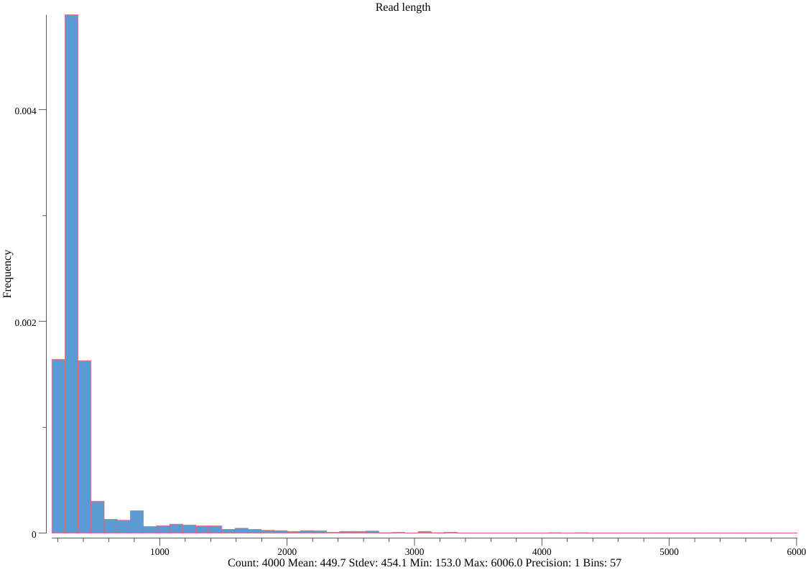

Usage and Examples
Quick Guide
- Basic: seq, stats, subseq, sliding, faidx, translate, watch, sana, scat
- Format conversion: fq2fa, fa2fq, fx2tab, tab2fx, convert
- Searching: grep, locate, amplicon, fish
- Set operation: sample, rmdup, common, duplicate, split, split2, head, head-genome, range, pair
- Edit: concat, replace, restart, mutate, rename
- Ordering: sort, shuffle
- BAM processing: bam
- Others: sum, merge-slides
Technical details and guides for use
FASTA/Q format parsing and writing
Seqkit also supports reading and writing xz (.xz) and zstd (.zst) formats since v2.2.0. Bzip2 format is supported since v2.4.0.
SeqKit uses the author's lightweight and high-performance bioinformatics package bio for FASTA/Q parsing, which has high performance close to the famous C lib klib (kseq.h).

Notes:
seqkituses 4 threads by default.seqkit_t1uses 1 thread.seqtkis single-threaded.seqtk+gzip:seqtkpipes data to the single-threadedgzip.seqtk+pigz:seqtkpipes data to the multithreadedpigzwhich uses 4 threads here.
Input and output files
Seqkit accepts input data from standard input (STDIN) and plain or gzip-compressed files.
Files can be given via positional arguments or the flag --infile-list. For example:
seqkit seq a.fasta b.fasta
seqkit seq --infile-list file-list.txt
seqkit seq --infile-list <(find -name "*.fq.gz" directory)
Result are printed to standard ouput (STDOUT) by default, you can also specify the output file
via the flag -o/--out-file. The file name extension .gz is automatically recognized.
For example:
seqkit seq a.fasta -o a.fasta.gz
seqkit grep -f IDs.txt read_1.fq.gz -o dir/read_1.fq.gz
Seqkit utlizies the pgzip package to read and write gzip file,
and the outputted gzip file would be slighty larger than files generated by GNU gzip.
Seqkit writes gzip files very fast, much faster than the multi-threaded pigz,
so there's no need to pipe the result to gzip/pigz.
Sequence formats and types
SeqKit seamlessly support FASTA and FASTQ format.
Sequence format is automatically detected.
All subcommands except for faidx and bam can handle both formats.
And only when some commands (subseq, split, sort and shuffle)
which utilise FASTA index to improve perfrmance for large files in two pass mode
(by flag --two-pass), only FASTA format is supported.
Sequence type (DNA/RNA/Protein) is automatically detected by leading subsequences
of the first sequences in file or STDIN. The length of the leading subsequences
is configurable by global flag --alphabet-guess-seq-length with default value
of 10000. If length of the sequences is less than that, whole sequences will
be checked.
Sequence ID
By default, most softwares, including seqkit, take the leading non-space
letters as sequence identifier (ID). For example,
| FASTA header | ID |
|---|---|
| >123456 gene name | 123456 |
| >longname | longname |
| >gi|110645304|ref|NC_002516.2| Pseudomona | gi|110645304|ref|NC_002516.2| |
But for some sequences from NCBI,
e.g. >gi|110645304|ref|NC_002516.2| Pseudomona, the ID is NC_002516.2.
In this case, we could set sequence ID parsing regular expression by global flag
--id-regexp "\|([^\|]+)\| " or just use flag --id-ncbi. If you want
the gi number, then use --id-regexp "^gi\|([^\|]+)\|".
FASTA index
For some commands, including subseq, split, sort and shuffle,
when input files are (plain or gzipped) FASTA files,
FASTA index would be optional used for
rapid access of sequences and reducing memory occupation.
ATTENTION: the .seqkit.fai file created by SeqKit is a little different from .fai file
created by samtools. SeqKit uses full sequence head instead of just ID as key.
Parallelization of CPU intensive jobs
The validation of sequences bases and complement process of sequences are parallelized for large sequences.
Parsing of line-based files, including BED/GFF file and ID list file are also parallelized.
The pgzip package reads and write gzip files in parallel.
The Parallelization is implemented by multiple goroutines in golang
which are similar to but much
lighter weight than threads. The concurrency number is configurable with global
flag -j or --threads (default value: 4).
Using four threads is fast enough for most commands where FASTA/Q reading and writing is the performance bottleneck, and using more threads will not increase the speed.
Few commands could benefit from multiple (>4) threads:
statsscatgrep -s -mlocate -s -mamplicon -s -m
Memory occupation
Most of the subcommands do not read whole FASTA/Q records in to memory,
including stat, fq2fa, fx2tab, tab2fx, grep, locate, replace,
seq, sliding, subseq.
Note that when using subseq --gtf | --bed, if the GTF/BED files are too
big, the memory usage will increase.
You could use --chr to specify chromesomes and --feature to limit features.
Some subcommands could either read all records or read the files twice by flag
-2 (--two-pass), including sample, split, shuffle and sort.
They use FASTA index for rapid acccess of sequences and reducing memory occupation.
Reproducibility
Subcommands sample and shuffle use random function, random seed could be
given by flag -s (--rand-seed). This makes sure that sampling result could be
reproduced in different environments with same random seed.
seqkit
SeqKit -- a cross-platform and ultrafast toolkit for FASTA/Q file manipulation
Version: 2.8.0
Author: Wei Shen <shenwei356@gmail.com>
Documents : http://bioinf.shenwei.me/seqkit
Source code: https://github.com/shenwei356/seqkit
Please cite: https://doi.org/10.1371/journal.pone.0163962
Seqkit utlizies the pgzip (https://github.com/klauspost/pgzip) package to
read and write gzip file, and the outputted gzip file would be slighty
larger than files generated by GNU gzip.
Seqkit writes gzip files very fast, much faster than the multi-threaded pigz,
therefore there's no need to pipe the result to gzip/pigz.
Seqkit also supports reading and writing xz (.xz) and zstd (.zst) formats since v2.2.0.
Bzip2 format is supported since v2.4.0.
Compression level:
format range default comment
gzip 1-9 5 https://github.com/klauspost/pgzip sets 5 as the default value.
xz NA NA https://github.com/ulikunitz/xz does not support.
zstd 1-4 2 roughly equals to zstd 1, 3, 7, 11, respectively.
bzip 1-9 6 https://github.com/dsnet/compress
Usage:
seqkit [command]
Commands for Basic Operation:
faidx create the FASTA index file and extract subsequences
scat real time recursive concatenation and streaming of fastx files
seq transform sequences (extract ID, filter by length, remove gaps, reverse complement...)
sliding extract subsequences in sliding windows
stats simple statistics of FASTA/Q files
subseq get subsequences by region/gtf/bed, including flanking sequences
translate translate DNA/RNA to protein sequence (supporting ambiguous bases)
watch monitoring and online histograms of sequence features
Commands for Format Conversion:
convert convert FASTQ quality encoding between Sanger, Solexa and Illumina
fa2fq retrieve corresponding FASTQ records by a FASTA file
fq2fa convert FASTQ to FASTA
fx2tab convert FASTA/Q to tabular format (and length, GC content, average quality...)
tab2fx convert tabular format to FASTA/Q format
Commands for Searching:
amplicon extract amplicon (or specific region around it) via primer(s)
fish look for short sequences in larger sequences using local alignment
grep search sequences by ID/name/sequence/sequence motifs, mismatch allowed
locate locate subsequences/motifs, mismatch allowed
Commands for Set Operation:
common find common/shared sequences of multiple files by id/name/sequence
duplicate duplicate sequences N times
head print first N FASTA/Q records
head-genome print sequences of the first genome with common prefixes in name
pair match up paired-end reads from two fastq files
range print FASTA/Q records in a range (start:end)
rmdup remove duplicated sequences by ID/name/sequence
sample sample sequences by number or proportion
split split sequences into files by id/seq region/size/parts (mainly for FASTA)
split2 split sequences into files by size/parts (FASTA, PE/SE FASTQ)
Commands for Edit:
concat concatenate sequences with the same ID from multiple files
mutate edit sequence (point mutation, insertion, deletion)
rename rename duplicated IDs
replace replace name/sequence by regular expression
restart reset start position for circular genome
sana sanitize broken single line FASTQ files
Commands for Ordering:
shuffle shuffle sequences
sort sort sequences by id/name/sequence/length
Commands for BAM Processing:
bam monitoring and online histograms of BAM record features
Commands for Miscellaneous:
merge-slides merge sliding windows generated from seqkit sliding
sum compute message digest for all sequences in FASTA/Q files
Additional Commands:
genautocomplete generate shell autocompletion script (bash|zsh|fish|powershell)
version print version information and check for update
Flags:
--alphabet-guess-seq-length int length of sequence prefix of the first FASTA record based on
which seqkit guesses the sequence type (0 for whole seq)
(default 10000)
--compress-level int compression level for gzip, zstd, xz and bzip2. type "seqkit -h"
for the range and default value for each format (default -1)
-h, --help help for seqkit
--id-ncbi FASTA head is NCBI-style, e.g. >gi|110645304|ref|NC_002516.2|
Pseud...
--id-regexp string regular expression for parsing ID (default "^(\\S+)\\s?")
-X, --infile-list string file of input files list (one file per line), if given, they are
appended to files from cli arguments
-w, --line-width int line width when outputting FASTA format (0 for no wrap) (default 60)
-o, --out-file string out file ("-" for stdout, suffix .gz for gzipped out) (default "-")
--quiet be quiet and do not show extra information
-t, --seq-type string sequence type (dna|rna|protein|unlimit|auto) (for auto, it
automatically detect by the first sequence) (default "auto")
-j, --threads int number of CPUs. can also set with environment variable
SEQKIT_THREADS) (default 4)
Use "seqkit [command] --help" for more information about a command.
Datasets
Datasets from The miRBase Sequence Database -- Release 21
Human genome from ensembl
(For seqkit subseq)
Homo_sapiens.GRCh38.dna_sm.primary_assembly.fa.gzHomo_sapiens.GRCh38.84.gtf.gzHomo_sapiens.GRCh38.84.bed.gzis converted fromHomo_sapiens.GRCh38.84.gtf.gzbygtf2bedwith the commandzcat Homo_sapiens.GRCh38.84.gtf.gz \ | gtf2bed --do-not-sort \ | gzip -c > Homo_sapiens.GRCh38.84.bed.gz
Only DNA and gtf/bed data of Chr1 were used:
-
chr1.fa.gzseqkit grep -p 1 Homo_sapiens.GRCh38.dna_sm.primary_assembly.fa.gz -o chr1.fa.gz -
chr1.gtf.gzzcat Homo_sapiens.GRCh38.84.gtf.gz | grep -w '^1' | gzip -c > chr1.gtf.gz -
chr1.bed.gzzcat Homo_sapiens.GRCh38.84.bed.gz | grep -w '^1' | gzip -c > chr1.bed.gz
seq
Usage
transform sequences (extract ID, filter by length, remove gaps, reverse complement...)
Usage:
seqkit seq [flags]
Flags:
-k, --color colorize sequences - to be piped into "less -R"
-p, --complement complement sequence, flag '-v' is recommended to switch on
--dna2rna DNA to RNA
-G, --gap-letters string gap letters to be removed with -g/--remove-gaps (default "- \t.")
-h, --help help for seq
-l, --lower-case print sequences in lower case
-M, --max-len int only print sequences shorter than or equal to the maximum length (-1 for
no limit) (default -1)
-R, --max-qual float only print sequences with average quality less than this limit (-1 for no
limit) (default -1)
-m, --min-len int only print sequences longer than or equal to the minimum length (-1 for no
limit) (default -1)
-Q, --min-qual float only print sequences with average quality greater or equal than this limit
(-1 for no limit) (default -1)
-n, --name only print names/sequence headers
-i, --only-id print IDs instead of full headers
-q, --qual only print qualities
-b, --qual-ascii-base int ASCII BASE, 33 for Phred+33 (default 33)
-g, --remove-gaps remove gaps letters set by -G/--gap-letters, e.g., spaces, tabs, and
dashes (gaps "-" in aligned sequences)
-r, --reverse reverse sequence
--rna2dna RNA to DNA
-s, --seq only print sequences
-u, --upper-case print sequences in upper case
-v, --validate-seq validate bases according to the alphabet
Examples
-
Read and print
-
From file:
$ seqkit seq hairpin.fa.gz >cel-let-7 MI0000001 Caenorhabditis elegans let-7 stem-loop UACACUGUGGAUCCGGUGAGGUAGUAGGUUGUAUAGUUUGGAAUAUUACCACCGGUGAAC UAUGCAAUUUUCUACCUUACCGGAGACAGAACUCUUCGA $ seqkit seq reads_1.fq.gz @HWI-D00523:240:HF3WGBCXX:1:1101:2574:2226 1:N:0:CTGTAG TGAGGAATATTGGTCAATGGGCGCGAGCCTGAACCAGCCAAGTAGCGTGAAGGATGACTGCCCTACGGG + HIHIIIIIHIIHGHHIHHIIIIIIIIIIIIIIIHHIIIIIHHIHIIIIIGIHIIIIHHHHHHGHIHIII -
From stdin:
zcat hairpin.fa.gz | seqkit seq
-
-
Sequence types
-
By default,
seqkit seqautomatically detect the sequence type$ echo -e ">seq\nacgtryswkmbdhvACGTRYSWKMBDHV" | seqkit stats file format type num_seqs sum_len min_len avg_len max_len - FASTA DNA 1 28 28 28 28 $ echo -e ">seq\nACGUN ACGUN" | seqkit stats file format type num_seqs sum_len min_len avg_len max_len - FASTA RNA 1 11 11 11 11 $ echo -e ">seq\nabcdefghijklmnpqrstvwyz" | seqkit stats file format type num_seqs sum_len min_len avg_len max_len - FASTA Protein 1 23 23 23 23 $ echo -e "@read\nACTGCN\n+\n@IICCG" | seqkit stats file format type num_seqs sum_len min_len avg_len max_len - FASTQ DNA 1 6 6 6 6 -
You can also set sequence type by flag
-t(--seq-type). But this only take effect on subcommandsseqandlocate.$ echo -e ">seq\nabcdefghijklmnpqrstvwyz" | seqkit seq -t dna [INFO] when flag -t (--seq-type) given, flag -v (--validate-seq) is automatically switched on [ERRO] error when parsing seq: seq (invalid DNAredundant letter: e)
-
-
Only print names
-
Full name:
$ seqkit seq hairpin.fa.gz -n cel-let-7 MI0000001 Caenorhabditis elegans let-7 stem-loop cel-lin-4 MI0000002 Caenorhabditis elegans lin-4 stem-loop cel-mir-1 MI0000003 Caenorhabditis elegans miR-1 stem-loop -
Only ID:
$ seqkit seq hairpin.fa.gz -n -i cel-let-7 cel-lin-4 cel-mir-1 -
Custom ID region by regular expression (this could be applied to all subcommands):
$ seqkit seq hairpin.fa.gz -n -i --id-regexp "^[^\s]+\s([^\s]+)\s" MI0000001 MI0000002 MI0000003
-
-
Only print seq (global flag
-wdefines the output line width,0for no wrap)$ seqkit seq hairpin.fa.gz -s -w 0 UACACUGUGGAUCCGGUGAGGUAGUAGGUUGUAUAGUUUGGAAUAUUACCACCGGUGAACUAUGCAAUUUUCUACCUUACCGGAGACAGAACUCUUCGA AUGCUUCCGGCCUGUUCCCUGAGACCUCAAGUGUGAGUGUACUAUUGAUGCUUCACACCUGGGCUCUCCGGGUACCAGGACGGUUUGAGCAGAU AAAGUGACCGUACCGAGCUGCAUACUUCCUUACAUGCCCAUACUAUAUCAUAAAUGGAUAUGGAAUGUAAAGAAGUAUGUAGAACGGGGUGGUAGU -
Convert multi-line FASTQ to 4-line FASTQ
$ seqkit seq reads_1.fq.gz -w 0 -
Reverse comlement sequence
$ seqkit seq hairpin.fa.gz -r -p >cel-let-7 MI0000001 Caenorhabditis elegans let-7 stem-loop UCGAAGAGUUCUGUCUCCGGUAAGGUAGAAAAUUGCAUAGUUCACCGGUGGUAAUAUUCC AAACUAUACAACCUACUACCUCACCGGAUCCACAGUGUA -
Remove gaps and to lower/upper case
$ echo -e ">seq\nACGT-ACTGC-ACC" | seqkit seq -g -u >seq ACGTACTGCACC -
RNA to DNA
$ echo -e ">seq\nUCAUAUGCUUGUCUCAAAGAUUA" | seqkit seq --rna2dna >seq TCATATGCTTGTCTCAAAGATTA -
Filter by sequence length
$ cat hairpin.fa | seqkit seq | seqkit stats file format type num_seqs sum_len min_len avg_len max_len - FASTA RNA 28,645 2,949,871 39 103 2,354 $ cat hairpin.fa | seqkit seq -m 100 | seqkit stats file format type num_seqs sum_len min_len avg_len max_len - FASTA RNA 10,975 1,565,486 100 142.6 2,354 $ cat hairpin.fa | seqkit seq -m 100 -M 1000 | seqkit stats file format type num_seqs sum_len min_len avg_len max_len - FASTA RNA 10,972 1,560,270 100 142.2 938
subseq
Usage
get subsequences by region/gtf/bed, including flanking sequences.
Attention:
1. Use "seqkit grep" for extract subsets of sequences.
"seqtk subseq seqs.fasta id.txt" equals to
"seqkit grep -f id.txt seqs.fasta"
Recommendation:
1. Use plain FASTA file, so seqkit could utilize FASTA index.
2. The flag -U/--update-faidx is recommended to ensure the .fai file matches the FASTA file.
The definition of region is 1-based and with some custom design.
Examples:
1-based index 1 2 3 4 5 6 7 8 9 10
negative index 0-9-8-7-6-5-4-3-2-1
seq A C G T N a c g t n
1:1 A
2:4 C G T
-4:-2 c g t
-4:-1 c g t n
-1:-1 n
2:-2 C G T N a c g t
1:-1 A C G T N a c g t n
1:12 A C G T N a c g t n
-12:-1 A C G T N a c g t n
Usage:
seqkit subseq [flags]
Flags:
--bed string by tab-delimited BED file
--chr strings select limited sequence with sequence IDs when using --gtf or --bed (multiple
value supported, case ignored)
-d, --down-stream int down stream length
--feature strings select limited feature types (multiple value supported, case ignored, only
works with GTF)
--gtf string by GTF (version 2.2) file
--gtf-tag string output this tag as sequence comment (default "gene_id")
-h, --help help for subseq
-f, --only-flank only return up/down stream sequence
-r, --region string by region. e.g 1:12 for first 12 bases, -12:-1 for last 12 bases, 13:-1 for
cutting first 12 bases. type "seqkit subseq -h" for more examples
-R, --region-coord append coordinates to sequence ID for -r/--region
-u, --up-stream int up stream length
-U, --update-faidx update the fasta index file if it exists. Use this if you are not sure whether
the fasta file changed
Examples
Recommendation: use plain FASTA file, so seqkit could utilize FASTA index.
-
First 12 bases
$ zcat hairpin.fa.gz | seqkit subseq -r 1:12 -
Last 12 bases
$ zcat hairpin.fa.gz | seqkit subseq -r -12:-1 -
Subsequences without first and last 12 bases
$ zcat hairpin.fa.gz | seqkit subseq -r 13:-13 -
Get subsequence by GTF file
$ cat t.fa >seq actgACTGactgn $ cat t.gtf seq test CDS 5 8 . . . gene_id "A"; transcript_id ""; seq test CDS 5 8 . - . gene_id "B"; transcript_id ""; $ seqkit subseq --gtf t.gtf t.fa >seq_5:8:. A ACTG >seq_5:8:- B CAGTHuman genome example:
AVOID loading all data from Homo_sapiens.GRCh38.84.gtf.gz, the uncompressed data are so big and may exhaust your RAM.
We could specify chromesomes and features.
$ seqkit subseq --gtf Homo_sapiens.GRCh38.84.gtf.gz --chr 1 --feature cds hsa.fa > chr1.gtf.cds.fa $ seqkit stats chr1.gtf.cds.fa file format type num_seqs sum_len min_len avg_len max_len chr1.gtf.cds.fa FASTA DNA 65,012 9,842,274 1 151.4 12,045 -
Get CDS and 3bp up-stream sequences
$ seqkit subseq --gtf t.gtf t.fa -u 3 >seq_5:8:._us:3 A ctgACTG >seq_5:8:-_us:3 B agtCAGT -
Get 3bp up-stream sequences of CDS, not including CDS
$ seqkit subseq --gtf t.gtf t.fa -u 3 -f >seq_5:8:._usf:3 A ctg >seq_5:8:-_usf:3 B agt -
Get subsequences by BED file.
AVOID loading all data from Homo_sapiens.GRCh38.84.gtf.gz, the uncompressed data are so big and may exhaust your RAM.
$ seqkit subseq --bed Homo_sapiens.GRCh38.84.bed.gz --chr 1 hsa.fa \ > chr1.bed.gz.faWe may need to remove duplicated sequences
$ seqkit subseq --bed Homo_sapiens.GRCh38.84.bed.gz --chr 1 hsa.fa \ | seqkit rmdup > chr1.bed.rmdup.fa [INFO] 141060 duplicated records removedSummary:
$ seqkit stats chr1.gz.*.gz file seq_format seq_type num_seqs min_len avg_len max_len chr1.gz.fa FASTA DNA 231,974 1 3,089.5 1,551,957 chr1.gz.rmdup.fa FASTA DNA 90,914 1 6,455.8 1,551,957
sliding
Usage
extract subsequences in sliding windows
Usage:
seqkit sliding [flags]
Flags:
-c, --circular circular genome (same to -C/--circular-genome)
-C, --circular-genome circular genome (same to -c/--circular)
-g, --greedy greedy mode, i.e., exporting last subsequences even shorter than the windows size
-h, --help help for sliding
-s, --step int step size
-S, --sufix string suffix added to the sequence ID
-W, --window int window size
Examples
-
General use
$ echo -e ">seq\nACGTacgtNN" | seqkit sliding -s 3 -W 6 >seq_sliding:1-6 ACGTac >seq_sliding:4-9 TacgtN -
Greedy mode
$ echo -e ">seq\nACGTacgtNN" | seqkit sliding -s 3 -W 6 -g >seq_sliding:1-6 ACGTac >seq_sliding:4-9 TacgtN >seq_sliding:7-12 gtNN >seq_sliding:10-15 N -
Circular genome
$ echo -e ">seq\nACGTacgtNN" | seqkit sliding -s 3 -W 6 -C >seq_sliding:1-6 ACGTac >seq_sliding:4-9 TacgtN >seq_sliding:7-2 gtNNAC >seq_sliding:10-5 NACGTa -
Generate GC content for ploting
$ zcat hairpin.fa.gz \ | seqkit sliding -s 5 -W 30 \ | seqkit fx2tab -n -g cel-let-7_sliding:1-30 50.00 cel-let-7_sliding:6-35 46.67 cel-let-7_sliding:11-40 43.33 cel-let-7_sliding:16-45 36.67 cel-let-7_sliding:21-50 33.33 cel-let-7_sliding:26-55 40.00 ...
stats
Usage
simple statistics of FASTA/Q files
Columns:
1. file input file, "-" for STDIN
2. format FASTA or FASTQ
3. type DNA, RNA, Protein or Unlimit
4. num_seqs number of sequences
5. sum_len number of bases or residues , with gaps or spaces counted
6. min_len minimal sequence length , with gaps or spaces counted
7. avg_len average sequence length , with gaps or spaces counted
8. max_len miximal sequence length , with gaps or spaces counted
9. Q1 first quartile of sequence length , with gaps or spaces counted
10. Q2 median of sequence length , with gaps or spaces counted
11. Q3 third quartile of sequence length , with gaps or spaces counted
12. sum_gap number of gaps
13. N50 N50. https://en.wikipedia.org/wiki/N50,_L50,_and_related_statistics#N50
14. N50_num N50_num or L50. https://en.wikipedia.org/wiki/N50,_L50,_and_related_statistics#L50
15. Q20(%) percentage of bases with the quality score greater than 20
16. Q30(%) percentage of bases with the quality score greater than 30
17. AvgQual average quality
18. GC(%) percentage of GC content
Attention:
1. Sequence length metrics (sum_len, min_len, avg_len, max_len, Q1, Q2, Q3)
count the number of gaps or spaces. You can remove them with "seqkit seq -g":
seqkit seq -g input.fasta | seqkit stats
Tips:
1. For lots of small files (especially on SDD), use big value of '-j' to
parallelize counting.
2. Extract one metric with csvtk (https://github.com/shenwei356/csvtk):
seqkit stats -Ta input.fastq.gz | csvtk cut -t -f "Q30(%)" | csvtk del-header
Usage:
seqkit stats [flags]
Aliases:
stats, stat
Flags:
-N, --N strings other N50-like stats. value range [0, 100], multiple values supported,
e.g., -N 50,90 or -N 50 -N 90
-a, --all all statistics, including quartiles of seq length, sum_gap, N50
-b, --basename only output basename of files
-E, --fq-encoding string fastq quality encoding. available values: 'sanger', 'solexa',
'illumina-1.3+', 'illumina-1.5+', 'illumina-1.8+'. (default "sanger")
-G, --gap-letters string gap letters (default "- .")
-h, --help help for stats
-e, --skip-err skip error, only show warning message
-S, --skip-file-check skip input file checking when given files or a file list.
-i, --stdin-label string label for replacing default "-" for stdin (default "-")
-T, --tabular output in machine-friendly tabular format
Eexamples
-
General use
$ seqkit stats *.f{a,q}.gz file format type num_seqs sum_len min_len avg_len max_len hairpin.fa.gz FASTA RNA 28,645 2,949,871 39 103 2,354 mature.fa.gz FASTA RNA 35,828 781,222 15 21.8 34 reads_1.fq.gz FASTQ DNA 2,500 567,516 226 227 229 reads_2.fq.gz FASTQ DNA 2,500 560,002 223 224 225 -
Machine-friendly tabular format
$ seqkit stats *.f{a,q}.gz -T file format type num_seqs sum_len min_len avg_len max_len hairpin.fa.gz FASTA RNA 28645 2949871 39 103.0 2354 mature.fa.gz FASTA RNA 35828 781222 15 21.8 34 Illimina1.8.fq.gz FASTQ DNA 10000 1500000 150 150.0 150 reads_1.fq.gz FASTQ DNA 2500 567516 226 227.0 229 reads_2.fq.gz FASTQ DNA 2500 560002 223 224.0 225 # So you can process the result with tools like csvtk: http://bioinf.shenwei.me/csvtk $ seqkit stats *.f{a,q}.gz -T | csvtk pretty -t file format type num_seqs sum_len min_len avg_len max_len ----------------- ------ ---- -------- ------- ------- ------- ------- hairpin.fa.gz FASTA RNA 28645 2949871 39 103.0 2354 mature.fa.gz FASTA RNA 35828 781222 15 21.8 34 Illimina1.8.fq.gz FASTQ DNA 10000 1500000 150 150.0 150 reads_1.fq.gz FASTQ DNA 2500 567516 226 227.0 229 reads_2.fq.gz FASTQ DNA 2500 560002 223 224.0 225 # To markdown $ seqkit stats *.f{a,q}.gz -T | csvtk csv2md -t |file |format|type|num_seqs|sum_len|min_len|avg_len|max_len| |:----------------|:-----|:---|:-------|:------|:------|:------|:------| |hairpin.fa.gz |FASTA |RNA |28645 |2949871|39 |103.0 |2354 | |mature.fa.gz |FASTA |RNA |35828 |781222 |15 |21.8 |34 | |Illimina1.8.fq.gz|FASTQ |DNA |10000 |1500000|150 |150.0 |150 | |reads_1.fq.gz |FASTQ |DNA |2500 |567516 |226 |227.0 |229 | |reads_2.fq.gz |FASTQ |DNA |2500 |560002 |223 |224.0 |225 |file format type num_seqs sum_len min_len avg_len max_len hairpin.fa.gz FASTA RNA 28645 2949871 39 103.0 2354 mature.fa.gz FASTA RNA 35828 781222 15 21.8 34 Illimina1.8.fq.gz FASTQ DNA 10000 1500000 150 150.0 150 reads_1.fq.gz FASTQ DNA 2500 567516 226 227.0 229 reads_2.fq.gz FASTQ DNA 2500 560002 223 224.0 225 -
Extra information
$ seqkit stats *.f{a,q}.gz -a file format type num_seqs sum_len min_len avg_len max_len Q1 Q2 Q3 sum_gap N50 N50_num Q20(%) Q30(%) AvgQual GC(%) hairpin.fa.gz FASTA RNA 28,645 2,949,871 39 103 2,354 76 91 111 0 101 380 0 0 0 45.77 mature.fa.gz FASTA RNA 35,828 781,222 15 21.8 34 21 22 22 0 22 12 0 0 0 47.6 Illimina1.8.fq.gz FASTQ DNA 10,000 1,500,000 150 150 150 150 150 150 0 150 1 96.16 89.71 24.82 49.91 nanopore.fq.gz FASTQ DNA 4,000 1,798,723 153 449.7 6,006 271 318 391 0 395 585 40.79 12.63 9.48 46.66 reads_1.fq.gz FASTQ DNA 2,500 567,516 226 227 229 227 227 227 0 227 3 91.24 86.62 15.45 53.63 reads_2.fq.gz FASTQ DNA 2,500 560,002 223 224 225 224 224 224 0 224 2 91.06 87.66 14.62 54.77 -
Parallelize counting files, it's much faster for lots of small files, especially for files on SSD
seqkit stats -j 10 refseq/virual/*.fna.gz -
Skip error
$ seqkit stats tests/* [ERRO] tests/hairpin.fa.fai: fastx: invalid FASTA/Q format $ seqkit stats tests/* -e [WARN] tests/hairpin.fa.fai: fastx: invalid FASTA/Q format [WARN] tests/hairpin.fa.seqkit.fai: fastx: invalid FASTA/Q format [WARN] tests/miRNA.diff.gz: fastx: invalid FASTA/Q format [WARN] tests/test.sh: fastx: invalid FASTA/Q format file format type num_seqs sum_len min_len avg_len max_len tests/contigs.fa FASTA DNA 9 54 2 6 10 tests/hairpin.fa FASTA RNA 28,645 2,949,871 39 103 2,354 tests/Illimina1.5.fq FASTQ DNA 1 100 100 100 100 tests/Illimina1.8.fq.gz FASTQ DNA 10,000 1,500,000 150 150 150 tests/hairpin.fa.gz FASTA RNA 28,645 2,949,871 39 103 2,354 tests/reads_1.fq.gz FASTQ DNA 2,500 567,516 226 227 229 tests/mature.fa.gz FASTA RNA 35,828 781,222 15 21.8 34 tests/reads_2.fq.gz FASTQ DNA 2,500 560,002 223 224 225 -
Output basename instead of full path (
-b/--basename)
sum
Usage
compute message digest for all sequences in FASTA/Q files
Attention:
1. Sequence headers and qualities are skipped, only sequences matter.
2. The order of sequences records does not matter.
3. Circular complete genomes are supported with the flag -c/--circular.
- The same double-stranded genomes with different start positions or
in reverse complement strand will not affect the result.
- For single-stranded genomes like ssRNA genomes, use -s/--single-strand.
- The message digest would change with different values of k-mer size.
4. Multiple files are processed in parallel (-j/--threads).
Method:
1. Converting the sequences to low cases, optionally removing gaps (-g).
2. Computing the hash (xxhash) for all sequences or k-mers of a circular
complete genome (-c/--circular).
3. Sorting all hash values, for ignoring the order of sequences.
4. Computing MD5 digest from the hash values, sequences length, and
the number of sequences.
Following the seqhash in Poly (https://github.com/TimothyStiles/poly/),
We add meta information to the message digest, with the format of:
seqkit.<version>_<seq type><seq structure><strand>_<kmer size>_<seq digest>
<version>: digest version
<seq type>: 'D' for DNA, 'R' for RNA, 'P' for protein, 'N' for others
<seq structure>: 'L' for linear sequence, 'C' for circular genome
<strand>: 'D' for double-stranded, 'S' for single-stranded
<kmer size>: 0 for linear sequence, other values for circular genome
Examples:
seqkit.v0.1_DLS_k0_176250c8d1cde6c385397df525aa1a94 DNA.fq.gz
seqkit.v0.1_PLS_k0_c244954e4960dd2a1409cd8ee53d92b9 Protein.fasta
seqkit.v0.1_RLS_k0_0f1fb263f0c05a259ae179a61a80578d single-stranded RNA.fasta
seqkit.v0.1_DCD_k31_e59dad6d561f1f1f28ebf185c6f4c183 double-stranded-circular DNA.fasta
seqkit.v0.1_DCS_k31_dd050490cd62ea5f94d73d4d636b7d60 single-stranded-circular DNA.fasta
Usage:
seqkit sum [flags]
Flags:
-a, --all show all information, including the sequences length and the number of sequences
-b, --basename only output basename of files
-c, --circular the file contains a single cicular genome sequence
-G, --gap-letters string gap letters to delete with the flag -g/--remove-gaps (default "- \t.*")
-h, --help help for sum
-k, --kmer-size int k-mer size for processing circular genomes (default 1000)
-g, --remove-gaps remove gap characters set in the option -G/gap-letters
--rna2dna convert RNA to DNA
-s, --single-strand only consider the positive strand of a circular genome, e.g., ssRNA virus
genomes
Examples:
A, B, C, D are the same vircular genomes with different starting positions or strands:
$ cat virus-{A,B,C,D}.fasta
>seq
TGGTAGGGAGTTGAGTAGCATGGGTATAGTATAGTGTCATGATGCCAGATTTTAAAAAAA
>seq.revcom
TTTTTTTAAAATCTGGCATCATGACACTATACTATACCCATGCTACTCAACTCCCTACCA
>seq.new-start
GGTAGGGAGTTGAGTAGCATGGGTATAGTATAGTGTCATGATGCCAGATTTTAAAAAAAT
>seq.revcom.new-start
TTTTTTAAAATCTGGCATCATGACACTATACTATACCCATGCTACTCAACTCCCTACCAT
# cat to one file
$ cat virus-{A,B,C,D}.fasta > virues.fasta
# shuffle and rename
$ cat virus-{A,B,C,D}.fasta \
| seqkit shuffle \
| seqkit replace -p '.*' -r '{nr}' \
| tee virues.shuffled.fasta
>1
TTTTTTAAAATCTGGCATCATGACACTATACTATACCCATGCTACTCAACTCCCTACCAT
>2
TGGTAGGGAGTTGAGTAGCATGGGTATAGTATAGTGTCATGATGCCAGATTTTAAAAAAA
>3
GGTAGGGAGTTGAGTAGCATGGGTATAGTATAGTGTCATGATGCCAGATTTTAAAAAAAT
>4
TTTTTTTAAAATCTGGCATCATGACACTATACTATACCCATGCTACTCAACTCCCTACCA
Sum of all files (the sequences order does not matter):
$ seqkit sum viru*.fasta
seqkit.v0.1_DLS_k0_9bbe0abefc26013dffdde952a6725b17 virues.fasta
seqkit.v0.1_DLS_k0_9bbe0abefc26013dffdde952a6725b17 virues.shuffled.fasta
seqkit.v0.1_DLS_k0_176250c8d1cde6c385397df525aa1a94 virus-A.fasta
seqkit.v0.1_DLS_k0_7a813339f9ae686b376b1df55cd596ca virus-B.fasta
seqkit.v0.1_DLS_k0_0fd51028bfbfa85ddbdd2b86ef7bd1c1 virus-C.fasta
seqkit.v0.1_DLS_k0_88b1d20dd0fe0dbf41c00b075fee4e4e virus-D.fasta
Circular genomes (the same genomes with different start positions or in reverse complement strand will not affect the result):
$ seqkit sum -c -k 21 virus-*.fasta
seqkit.v0.1_DCD_k21_7efd18ce33380268d3aa335ffd2dd1cc virus-A.fasta
seqkit.v0.1_DCD_k21_7efd18ce33380268d3aa335ffd2dd1cc virus-B.fasta
seqkit.v0.1_DCD_k21_7efd18ce33380268d3aa335ffd2dd1cc virus-C.fasta
seqkit.v0.1_DCD_k21_7efd18ce33380268d3aa335ffd2dd1cc virus-D.fasta
$ seqkit sum -c -k 51 virus-*.fasta
seqkit.v0.1_DCD_k51_39e267864fddeafd7a5cacd77e0a6a11 virus-A.fasta
seqkit.v0.1_DCD_k51_39e267864fddeafd7a5cacd77e0a6a11 virus-B.fasta
seqkit.v0.1_DCD_k51_39e267864fddeafd7a5cacd77e0a6a11 virus-C.fasta
seqkit.v0.1_DCD_k51_39e267864fddeafd7a5cacd77e0a6a11 virus-D.fasta
# collect files with the same genomes
$ seqkit sum -c -k 51 virus-*.fasta | csvtk fold -Ht -f 1 -v 2
seqkit.v0.1_DCD_k51_39e267864fddeafd7a5cacd77e0a6a11 virus-A.fasta; virus-B.fasta; virus-C.fasta; virus-D.fasta
faidx
Usage
create the FASTA index file and extract subsequences
This command is similar with "samtools faidx" but has some extra features:
1. output full header line with the flag -f
2. support regular expression as sequence ID with the flag -r
3. if you have large number of IDs, you can use:
seqkit faidx seqs.fasta -l IDs.txt
Attention:
1. The flag -U/--update-faidx is recommended to ensure the .fai file matches the FASTA file.
The definition of region is 1-based and with some custom design.
Examples:
1-based index 1 2 3 4 5 6 7 8 9 10
negative index 0-9-8-7-6-5-4-3-2-1
seq A C G T N a c g t n
1:1 A
2:4 C G T
-4:-2 c g t
-4:-1 c g t n
-1:-1 n
2:-2 C G T N a c g t
1:-1 A C G T N a c g t n
1:12 A C G T N a c g t n
-12:-1 A C G T N a c g t n
Usage:
seqkit faidx [flags] <fasta-file> [regions...]
Flags:
-f, --full-head print full header line instead of just ID. New fasta index file ending with
.seqkit.fai will be created
-h, --help help for faidx
-i, --ignore-case ignore case
-I, --immediate-output print output immediately, do not use write buffer
-l, --region-file string file containing a list of regions
-U, --update-faidx update the fasta index file if it exists. Use this if you are not sure
whether the fasta file changed
-r, --use-regexp IDs are regular expression. But subseq region is not supported here.
Example
-
common usage like
samtools faidx$ seqkit faidx tests/hairpin.fa hsa-let-7a-1 hsa-let-7a-2 >hsa-let-7a-1 UGGGAUGAGGUAGUAGGUUGUAUAGUUUUAGGGUCACACCCACCACUGGGAGAUAACUAU ACAAUCUACUGUCUUUCCUA >hsa-let-7a-2 AGGUUGAGGUAGUAGGUUGUAUAGUUUAGAAUUACAUCAAGGGAGAUAACUGUACAGCCU CCUAGCUUUCCU -
output full header, not supported by
samtools faidx$ seqkit faidx tests/hairpin.fa hsa-let-7a-1 hsa-let-7a-2 -f >hsa-let-7a-1 MI0000060 Homo sapiens let-7a-1 stem-loop UGGGAUGAGGUAGUAGGUUGUAUAGUUUUAGGGUCACACCCACCACUGGGAGAUAACUAU ACAAUCUACUGUCUUUCCUA >hsa-let-7a-2 MI0000061 Homo sapiens let-7a-2 stem-loop AGGUUGAGGUAGUAGGUUGUAUAGUUUAGAAUUACAUCAAGGGAGAUAACUGUACAGCCU CCUAGCUUUCCU -
extract subsequence of specific region
$ seqkit faidx tests/hairpin.fa hsa-let-7a-1:1-10 >hsa-let-7a-1:1-10 UGGGAUGAGG $ seqkit faidx tests/hairpin.fa hsa-let-7a-1:-10--1 >hsa-let-7a-1:-10--1 GUCUUUCCUA $ seqkit faidx tests/hairpin.fa hsa-let-7a-1:1 >hsa-let-7a-1:1-1 U -
supporting
begin>start, i.e., returning reverse complement sequence, not supported bysamtools faidx$ seqkit faidx tests/hairpin.fa hsa-let-7a-1:10-1 >hsa-let-7a-1:10-1 CCUCAUCCCA -
use regular expression
$ seqkit faidx tests/hairpin.fa hsa -r | seqkit stats file format type num_seqs sum_len min_len avg_len max_len - FASTA RNA 1,881 154,002 41 81.9 180
watch
Usage
monitoring and online histograms of sequence features
Usage:
seqkit watch [flags]
Flags:
-B, --bins int number of histogram bins (default -1)
-W, --delay int sleep this many seconds after online plotting (default 1)
-y, --dump print histogram data to stderr instead of plotting
-f, --fields string target fields, available values: ReadLen, MeanQual, GC, GCSkew (default
"ReadLen")
-h, --help help for watch
-O, --img string save histogram to this PDF/image file
-H, --list-fields print out a list of available fields
-L, --log log10(x+1) transform numeric values
-x, --pass pass through mode (write input to stdout)
-p, --print-freq int print/report after this many records (-1 for print after EOF) (default -1)
-b, --qual-ascii-base int ASCII BASE, 33 for Phred+33 (default 33)
-Q, --quiet-mode supress all plotting to stderr
-R, --reset reset histogram after every report
-v, --validate-seq validate bases according to the alphabet
Examples
-
Histogram of sequence length
seqkit watch --fields ReadLen nanopore.fq.gz -O len.png
-
Dynamic histogram of log sequence length
seqkit watch --log --fields ReadLen nanopore.fq.gz
-
Histogram of mean base qualities every 500 record, also saved as png
seqkit watch -p 500 -O qhist.png -f MeanQual nanopore.fq.gz
sana
Usage
sanitize broken single line FASTQ files
Usage:
seqkit sana [flags]
Flags:
-A, --allow-gaps allow gap character (-) in sequences
-i, --format string input and output format: fastq or fasta (default "fastq")
-h, --help help for sana
-I, --in-format string input format: fastq or fasta
-O, --out-format string output format: fastq or fasta
-b, --qual-ascii-base int ASCII BASE, 33 for Phred+33 (default 33)
Examples
- Rescue usable reads from fastq file with malformed records.
seqkit sana broken.fq.gz -o rescued.fq.gz
scat
Usage
real time recursive concatenation and streaming of fastx files
Usage:
seqkit scat [flags]
Flags:
-A, --allow-gaps allow gap character (-) in sequences
-d, --delta int minimum size increase in kilobytes to trigger parsing (default 5)
-D, --drop-time string Notification drop interval (default "500ms")
-f, --find-only concatenate exisiting files and quit
-i, --format string input and output format: fastq or fasta (fastq) (default "fastq")
-g, --gz-only only look for gzipped files (.gz suffix)
-h, --help help for scat
-I, --in-format string input format: fastq or fasta (fastq)
-O, --out-format string output format: fastq or fasta
-b, --qual-ascii-base int ASCII BASE, 33 for Phred+33 (default 33)
-r, --regexp string regexp for watched files, by default guessed from the input format
-T, --time-limit string quit after inactive for this time period
-p, --wait-pid int after process with this PID exited (default -1)
Examples
-
Concatenate all fastq files recursively under a directory
seqkit scat -j 4 -f fastq_dir > all_records.fq -
Watch a directory and stream fastq records in real time until interrupt is recieved and plot read lengths using
seqkit watch:seqkit scat -j 4 fastq_dir | seqkit watch -f ReadLen - -
Watch a directory and stream fastq records in real time until there is no write activity under the directory for 5 seconds:
seqkit scat -j 4 -T "5s" fastq_dir > all_records.fq -
Watch a directory and stream fastq records in real time until a process with a specified PID is alive:
seqkit scat -j 4 -p $PID fastq_dir > all_records.fq
Notes: You might need to increase the ulimit allowance on open files if you intend to stream fastx records from a large number of files.
fq2fa
Usage
convert FASTQ to FASTA
Usage:
seqkit fq2fa [flags]
Examples
seqkit fq2fa reads_1.fq.gz -o reads_1.fa.gz
fa2fq
Usage
retrieve corresponding FASTQ records by a FASTA file
Attention:
1. We assume the FASTA file comes from the FASTQ file,
so they share sequence IDs, and sequences in FASTA
should be subseq of sequences in FASTQ file.
Usage:
seqkit fa2fq [flags]
Flags:
-f, --fasta-file string FASTA file)
-h, --help help for fa2fq
-P, --only-positive-strand only search on positive strand
fx2tab & tab2fx
Usage (fx2tab)
convert FASTA/Q to tabular format, and provide various information,
like sequence length, GC content/GC skew.
Attention:
1. Fixed three columns (ID, sequence, quality) are outputted for either FASTA
or FASTQ, except when flag -n/--name is on. This is for format compatibility.
Usage:
seqkit fx2tab [flags]
Flags:
-a, --alphabet print alphabet letters
-q, --avg-qual print average quality of a read
-B, --base-content strings print base content. (case ignored, multiple values supported) e.g. -B AT -B N
-C, --base-count strings print base count. (case ignored, multiple values supported) e.g. -C AT -C N
-I, --case-sensitive calculate case sensitive base content/sequence hash
-g, --gc print GC content
-G, --gc-skew print GC-Skew
-H, --header-line print header line
-h, --help help for fx2tab
-l, --length print sequence length
-n, --name only print names (no sequences and qualities)
-Q, --no-qual only output two column even for FASTQ file
-i, --only-id print ID instead of full head
-b, --qual-ascii-base int ASCII BASE, 33 for Phred+33 (default 33)
-s, --seq-hash print hash (MD5) of sequence
Usage (tab2fx)
convert tabular format (first two/three columns) to FASTA/Q format
Usage:
seqkit tab2fx [flags]
Flags:
-b, --buffer-size string size of buffer, supported unit: K, M, G. You need increase the
value when "bufio.Scanner: token too long" error reported (default
"1G")
-p, --comment-line-prefix strings comment line prefix (default [#,//])
-h, --help help for tab2fx
Examples
-
Default output
$ seqkit fx2tab hairpin.fa.gz | head -n 2 cel-let-7 MI0000001 Caenorhabditis elegans let-7 stem-loop UACACUGUGGAUCCGGUGAGGUAGUAGGUUGUAUAGUUUGGAAUAUUACCACCGGUGAACUAUGCAAUUUUCUACCUUACCGGAGACAGAACUCUUCGA cel-lin-4 MI0000002 Caenorhabditis elegans lin-4 stem-loop AUGCUUCCGGCCUGUUCCCUGAGACCUCAAGUGUGAGUGUACUAUUGAUGCUUCACACCUGGGCUCUCCGGGUACCAGGACGGUUUGAGCAGAU -
Print sequence length, GC content, and only print names (no sequences), we could also print title line by flag
-H.$ seqkit fx2tab hairpin.fa.gz -l -g -n -i -H | head -n 4 | csvtk -t -C '&' pretty #name seq qual length GC cel-let-7 99 43.43 cel-lin-4 94 54.26 cel-mir-1 96 40.62 -
Use fx2tab and tab2fx in pipe
$ zcat hairpin.fa.gz | seqkit fx2tab | seqkit tab2fx $ zcat reads_1.fq.gz | seqkit fx2tab | seqkit tab2fx -
Sort sequences by length (use
seqkit sort -l)$ zcat hairpin.fa.gz \ | seqkit fx2tab -l \ | sort -t"`echo -e '\t'`" -n -k4,4 \ | seqkit tab2fx >cin-mir-4129 MI0015684 Ciona intestinalis miR-4129 stem-loop UUCGUUAUUGGAAGACCUUAGUCCGUUAAUAAAGGCAUC >mmu-mir-7228 MI0023723 Mus musculus miR-7228 stem-loop UGGCGACCUGAACAGAUGUCGCAGUGUUCGGUCUCCAGU >cin-mir-4103 MI0015657 Ciona intestinalis miR-4103 stem-loop ACCACGGGUCUGUGACGUAGCAGCGCUGCGGGUCCGCUGU $ seqkit sort -l hairpin.fa.gzSorting or filtering by GC (or other base by -flag
-B) content could also achieved in similar way. -
Get first 1000 sequences (use
seqkit head -n 1000)$ seqkit fx2tab hairpin.fa.gz | head -n 1000 | seqkit tab2fx $ seqkit fx2tab reads_1.fq.gz | head -n 1000 | seqkit tab2fx
Extension
After converting FASTA to tabular format with seqkit fx2tab,
it could be handled with CSV/TSV tools,
e.g. csvtk, a cross-platform, efficient and practical CSV/TSV toolkit
csvtk grepcould be used to filter sequences (similar withseqkit grep)csvtk intercomputates intersection of multiple files. It could achieve similar function asseqkit common -nalong with shell.csvtk joinjoins multiple CSV/TSV files by multiple IDs.
convert
Usage
convert FASTQ quality encoding between Sanger, Solexa and Illumina
Usage:
seqkit convert [flags]
Flags:
-d, --dry-run dry run
-f, --force for Illumina-1.8+ -> Sanger, truncate scores > 40 to 40
--from string source quality encoding. if not given, we'll guess it
-h, --help help for convert
-n, --nrecords int number of records for guessing quality encoding (default 1000)
-N, --thresh-B-in-n-most-common int threshold of 'B' in top N most common quality for guessing
Illumina 1.5. (default 2)
-F, --thresh-illumina1.5-frac float threshold of faction of Illumina 1.5 in the leading N records
(default 0.1)
--to string target quality encoding (default "Sanger")
Examples:
Note that seqkit convert always output sequences.
The test dataset contains score 41 (J):
$ seqkit head -n 1 tests/Illimina1.8.fq.gz
@ST-E00493:56:H33MFALXX:4:1101:23439:1379 1:N:0:NACAACCA
NCGTGGAAAGACGCTAAGATTGTGATGTGCTTCCCTGACGATTACAACTGGCGTAAGGACGTTTTGCCTACCTATAAGGCTAACCGTAAGGGTTCTCGCAAGCCTGTAGGTTACAAGAGGTTCGTAGCCGAAGTGATGGCTGACTCACGG
+
#AAAFAAJFFFJJJ<JJJJJFFFJFJJJJJFJJAJJJFJJFJFJJJJFAFJ<JA<FFJ7FJJFJJAAJJJJ<JJJJJJJFJJJAJJJJJFJJ77<JJJJ-F7A-FJFFJJJJJJ<FFJ-<7FJJJFJJ)A7)7AA<7--)<-7F-A7FA<
By default, nothing changes when converting Illumina 1.8 to Sanger. A warning message show that source and target quality encoding match.
$ seqkit convert tests/Illimina1.8.fq.gz | seqkit head -n 1
[INFO] possible quality encodings: [Illumina-1.8+]
[INFO] guessed quality encoding: Illumina-1.8+
[INFO] converting Illumina-1.8+ -> Sanger
[WARN] source and target quality encoding match.
@ST-E00493:56:H33MFALXX:4:1101:23439:1379 1:N:0:NACAACCA
NCGTGGAAAGACGCTAAGATTGTGATGTGCTTCCCTGACGATTACAACTGGCGTAAGGACGTTTTGCCTACCTATAAGGCTAACCGTAAGGGTTCTCGCAAGCCTGTAGGTTACAAGAGGTTCGTAGCCGAAGTGATGGCTGACTCACGG
+
#AAAFAAJFFFJJJ<JJJJJFFFJFJJJJJFJJAJJJFJJFJFJJJJFAFJ<JA<FFJ7FJJFJJAAJJJJ<JJJJJJJFJJJAJJJJJFJJ77<JJJJ-F7A-FJFFJJJJJJ<FFJ-<7FJJJFJJ)A7)7AA<7--)<-7F-A7FA<
When switching flag --force on, J (41) was converted to I (40).
$ seqkit convert tests/Illimina1.8.fq.gz -f | seqkit head -n 1
[INFO] possible quality encodings: [Illumina-1.8+]
[INFO] guessed quality encoding: Illumina-1.8+
[INFO] converting Illumina-1.8+ -> Sanger
@ST-E00493:56:H33MFALXX:4:1101:23439:1379 1:N:0:NACAACCA
NCGTGGAAAGACGCTAAGATTGTGATGTGCTTCCCTGACGATTACAACTGGCGTAAGGACGTTTTGCCTACCTATAAGGCTAACCGTAAGGGTTCTCGCAAGCCTGTAGGTTACAAGAGGTTCGTAGCCGAAGTGATGGCTGACTCACGG
+
#AAAFAAIFFFIII<IIIIIFFFIFIIIIIFIIAIIIFIIFIFIIIIFAFI<IA<FFI7FIIFIIAAIIII<IIIIIIIFIIIAIIIIIFII77<IIII-F7A-FIFFIIIIII<FFI-<7FIIIFII)A7)7AA<7--)<-7F-A7FA<
Other cases:
To Illumina-1.5.
$ seqkit convert tests/Illimina1.8.fq.gz --to Illumina-1.5+ | seqkit head -n 1
[INFO] possible quality encodings: [Illumina-1.8+]
[INFO] guessed quality encoding: Illumina-1.8+
[INFO] converting Illumina-1.8+ -> Illumina-1.5+
@ST-E00493:56:H33MFALXX:4:1101:23439:1379 1:N:0:NACAACCA
NCGTGGAAAGACGCTAAGATTGTGATGTGCTTCCCTGACGATTACAACTGGCGTAAGGACGTTTTGCCTACCTATAAGGCTAACCGTAAGGGTTCTCGCAAGCCTGTAGGTTACAAGAGGTTCGTAGCCGAAGTGATGGCTGACTCACGG
+
B```e``ieeeiii[iiiiieeeieiiiiieii`iiieiieieiiiie`ei[i`[eeiVeiieii``iiii[iiiiiiieiii`iiiiieiiVV[iiiiLeV`Leieeiiiiii[eeiL[VeiiieiiH`VHV``[VLLH[LVeL`Ve`[
To Illumina-1.5 and back to Sanger.
$ seqkit convert tests/Illimina1.8.fq.gz --to Illumina-1.5+ | seqkit convert | seqkit head -n 1
[INFO] possible quality encodings: [Illumina-1.8+]
[INFO] guessed quality encoding: Illumina-1.8+
[INFO] converting Illumina-1.8+ -> Illumina-1.5+
[INFO] possible quality encodings: [Illumina-1.5+]
[INFO] guessed quality encoding: Illumina-1.5+
[INFO] converting Illumina-1.5+ -> Sanger
@ST-E00493:56:H33MFALXX:4:1101:23439:1379 1:N:0:NACAACCA
NCGTGGAAAGACGCTAAGATTGTGATGTGCTTCCCTGACGATTACAACTGGCGTAAGGACGTTTTGCCTACCTATAAGGCTAACCGTAAGGGTTCTCGCAAGCCTGTAGGTTACAAGAGGTTCGTAGCCGAAGTGATGGCTGACTCACGG
+
!AAAFAAJFFFJJJ<JJJJJFFFJFJJJJJFJJAJJJFJJFJFJJJJFAFJ<JA<FFJ7FJJFJJAAJJJJ<JJJJJJJFJJJAJJJJJFJJ77<JJJJ-F7A-FJFFJJJJJJ<FFJ-<7FJJJFJJ)A7)7AA<7--)<-7F-A7FA<
Checking encoding
$ seqkit convert tests/Illimina1.8.fq.gz --from Solexa
[INFO] converting Solexa -> Sanger
[ERRO] seq: invalid Solexa quality
Real Illumina 1.5+ data
$ seqkit seq tests/Illimina1.5.fq
@HWI-EAS209_0006_FC706VJ:5:58:5894:21141#ATCACG/1
TTAATTGGTAAATAAATCTCCTAATAGCTTAGATNTTACCTTNNNNNNNNNNTAGTTTCTTGAGATTTGTTGGGGGAGACATTTTTGTGATTGCCTTGAT
+
efcfffffcfeefffcffffffddf`feed]`]_Ba_^__[YBBBBBBBBBBRTT\]][]dddd`ddd^dddadd^BBBBBBBBBBBBBBBBBBBBBBBB
$ seqkit convert tests/Illimina1.5.fq | seqkit head -n 1
[INFO] possible quality encodings: [Illumina-1.5+]
[INFO] guessed quality encoding: Illumina-1.5+
[INFO] converting Illumina-1.5+ -> Sanger
@HWI-EAS209_0006_FC706VJ:5:58:5894:21141#ATCACG/1
TTAATTGGTAAATAAATCTCCTAATAGCTTAGATNTTACCTTNNNNNNNNNNTAGTTTCTTGAGATTTGTTGGGGGAGACATTTTTGTGATTGCCTTGAT
+
FGDGGGGGDGFFGGGDGGGGGGEEGAGFFE>A>@!B@?@@<:!!!!!!!!!!355=>><>EEEEAEEE?EEEBEE?!!!!!!!!!!!!!!!!!!!!!!!!
translate
Usage
translate DNA/RNA to protein sequence (supporting ambiguous bases)
Note:
1. This command supports codons containing any ambiguous base.
Please switch on flag -L INT for details. e.g., for standard table:
ACN -> T
CCN -> P
CGN -> R
CTN -> L
GCN -> A
GGN -> G
GTN -> V
TCN -> S
MGR -> R
YTR -> L
Translate Tables/Genetic Codes:
# https://www.ncbi.nlm.nih.gov/Taxonomy/taxonomyhome.html/index.cgi?chapter=tgencodes
1: The Standard Code
2: The Vertebrate Mitochondrial Code
3: The Yeast Mitochondrial Code
4: The Mold, Protozoan, and Coelenterate Mitochondrial Code and the Mycoplasma/Spiroplasma Code
5: The Invertebrate Mitochondrial Code
6: The Ciliate, Dasycladacean and Hexamita Nuclear Code
9: The Echinoderm and Flatworm Mitochondrial Code
10: The Euplotid Nuclear Code
11: The Bacterial, Archaeal and Plant Plastid Code
12: The Alternative Yeast Nuclear Code
13: The Ascidian Mitochondrial Code
14: The Alternative Flatworm Mitochondrial Code
16: Chlorophycean Mitochondrial Code
21: Trematode Mitochondrial Code
22: Scenedesmus obliquus Mitochondrial Code
23: Thraustochytrium Mitochondrial Code
24: Pterobranchia Mitochondrial Code
25: Candidate Division SR1 and Gracilibacteria Code
26: Pachysolen tannophilus Nuclear Code
27: Karyorelict Nuclear
28: Condylostoma Nuclear
29: Mesodinium Nuclear
30: Peritrich Nuclear
31: Blastocrithidia Nuclear
Usage:
seqkit translate [flags]
Flags:
-x, --allow-unknown-codon translate unknown code to 'X'. And you may not use flag
--trim which removes 'X'
-F, --append-frame append frame information to sequence ID
--clean change all STOP codon positions from the '*' character
to 'X' (an unknown residue)
-f, --frame strings frame(s) to translate, available value: 1, 2, 3, -1, -2,
-3, and 6 for all six frames (default [1])
-h, --help help for translate
-M, --init-codon-as-M translate initial codon at beginning to 'M'
-l, --list-transl-table int show details of translate table N, 0 for all (default -1)
-L, --list-transl-table-with-amb-codons int show details of translate table N (including ambigugous
codons), 0 for all. (default -1)
-m, --min-len int the minimum length of amino acid sequence
-s, --out-subseqs output individual amino acid subsequences seperated by
the stop symbol "*"
-T, --transl-table int translate table/genetic code, type 'seqkit translate
--help' for more details (default 1)
--trim remove all 'X' and '*' characters from the right end of
the translation
Examples
-
common usage
$ seqkit translate tests/mouse-p53-cds.fna >lcl|AB021961.1_cds_BAA82344.1_1 [gene=p53] [protein=P53] [protein_id=BAA82344.1] [location=101..1273] [gbkey=CDS] MTAMEESQSDISLELPLSQETFSGLWKLLPPEDILPSPHCMDDLLLPQDVEEFFEGPSEA LRVSGAPAAQDPVTETPGPVAPAPATPWPLSSFVPSQKTYQGNYGFHLGFLQSGTAKSVM CTYSPPLNKLFCQLAKTCPVQLWVSATPPAGSRVRAMAIYKKSQHMTEVVRRCPHHERCS DGDGLAPPQHRIRVEGNLYPEYLEDRQTFRHSVVVPYEPPEAGSEYTTIHYKYMCNSSCM GGMNRRPILTIITLEDSSGNLLGRDSFEVRVCACPGRDRRTEEENFRKKEVLCPELPPGS AKRALPTCTSASPPQKKKPLDGEYFTLKIRGRKRFEMFRELNEALELKDAHATEESGDSR AHSSYLKTKKGQSTSRHKKTMVKKVGPDSD* -
trim the
*$ seqkit translate tests/mouse-p53-cds.fna --trim >lcl|AB021961.1_cds_BAA82344.1_1 [gene=p53] [protein=P53] [protein_id=BAA82344.1] [location=101..1273] [gbkey=CDS] MTAMEESQSDISLELPLSQETFSGLWKLLPPEDILPSPHCMDDLLLPQDVEEFFEGPSEA LRVSGAPAAQDPVTETPGPVAPAPATPWPLSSFVPSQKTYQGNYGFHLGFLQSGTAKSVM CTYSPPLNKLFCQLAKTCPVQLWVSATPPAGSRVRAMAIYKKSQHMTEVVRRCPHHERCS DGDGLAPPQHRIRVEGNLYPEYLEDRQTFRHSVVVPYEPPEAGSEYTTIHYKYMCNSSCM GGMNRRPILTIITLEDSSGNLLGRDSFEVRVCACPGRDRRTEEENFRKKEVLCPELPPGS AKRALPTCTSASPPQKKKPLDGEYFTLKIRGRKRFEMFRELNEALELKDAHATEESGDSR AHSSYLKTKKGQSTSRHKKTMVKKVGPDSD -
different translate table
$ cat tests/Lactococcus-lactis-phage-BK5-T-ORF25.fasta \ | seqkit translate -T 11 --trim >CAC80166.1 hypothetical protein [Lactococcus phage BK5-T] MEEQAWREVLERLARIETKLDNYETVRDKAERALLIAQSNAKLIEKMEANNKWAWGFMLT LAVTVIGYLFTKIRF -
different frame
$ cat tests/Lactococcus-lactis-phage-BK5-T-ORF25.fasta \ | seqkit translate -T 11 --frame -1 >CAC80166.1 hypothetical protein [Lactococcus phage BK5-T] SESNFSE*ITNNSYGKSKHKAPSPLIISFHFFYKFRI*LSY*ERSFCFISNCFIVI*LCF NSS*TFEDFSPCLFLH $ cat tests/Lactococcus-lactis-phage-BK5-T-ORF25.fasta \ | seqkit seq -r -p \ | seqkit translate -T 11 --frame -1 >CAC80166.1 hypothetical protein [Lactococcus phage BK5-T] MEEQAWREVLERLARIETKLDNYETVRDKAERALLIAQSNAKLIEKMEANNKWAWGFMLT LAVTVIGYLFTKIRF* -
show details of translate table 1
$ seqkit translate -l 1 The Standard Code (transl_table=1) Source: https://www.ncbi.nlm.nih.gov/Taxonomy/taxonomyhome.html/index.cgi?chapter=tgencodes#SG1 Initiation Codons: ATG, CTG, TTG Stop Codons: TAA, TAG, TGA Stranslate Table: AAA: K, AAC: N, AAG: K, AAT: N ACA: T, ACC: T, ACG: T, ACT: T AGA: R, AGC: S, AGG: R, AGT: S ATA: I, ATC: I, ATG: M, ATT: I CAA: Q, CAC: H, CAG: Q, CAT: H CCA: P, CCC: P, CCG: P, CCT: P CGA: R, CGC: R, CGG: R, CGT: R CTA: L, CTC: L, CTG: L, CTT: L GAA: E, GAC: D, GAG: E, GAT: D GCA: A, GCC: A, GCG: A, GCT: A GGA: G, GGC: G, GGG: G, GGT: G GTA: V, GTC: V, GTG: V, GTT: V TAA: *, TAC: Y, TAG: *, TAT: Y TCA: S, TCC: S, TCG: S, TCT: S TGA: *, TGC: C, TGG: W, TGT: C TTA: L, TTC: F, TTG: L, TTT: F -
show details of translate table 1, including ambigugous codons
$ seqkit translate -L 1 The Standard Code (transl_table=1) Source: https://www.ncbi.nlm.nih.gov/Taxonomy/taxonomyhome.html/index.cgi?chapter=tgencodes#SG1 Initiation Codons: ATG, CTG, TTG Stop Codons: TAA, TAG, TGA Stranslate Table: AAA: K, AAC: N, AAG: K, AAR: K, AAT: N, AAY: N ACA: T, ACC: T, ACM: T, ACG: T, ACR: T, ACS: T, ACV: T, ACT: T, ACW: T, ACY: T, ACH: T, ACK: T, ACD: T, ACB: T, ACN: T AGA: R, AGC: S, AGG: R, AGR: R, AGT: S, AGY: S ATA: I, ATC: I, ATM: I, ATG: M, ATT: I, ATW: I, ATY: I, ATH: I CAA: Q, CAC: H, CAG: Q, CAR: Q, CAT: H, CAY: H CCA: P, CCC: P, CCM: P, CCG: P, CCR: P, CCS: P, CCV: P, CCT: P, CCW: P, CCY: P, CCH: P, CCK: P, CCD: P, CCB: P, CCN: P CGA: R, CGC: R, CGM: R, CGG: R, CGR: R, CGS: R, CGV: R, CGT: R, CGW: R, CGY: R, CGH: R, CGK: R, CGD: R, CGB: R, CGN: R CTA: L, CTC: L, CTM: L, CTG: L, CTR: L, CTS: L, CTV: L, CTT: L, CTW: L, CTY: L, CTH: L, CTK: L, CTD: L, CTB: L, CTN: L MGA: R, MGG: R, MGR: R GAA: E, GAC: D, GAG: E, GAR: E, GAT: D, GAY: D GCA: A, GCC: A, GCM: A, GCG: A, GCR: A, GCS: A, GCV: A, GCT: A, GCW: A, GCY: A, GCH: A, GCK: A, GCD: A, GCB: A, GCN: A GGA: G, GGC: G, GGM: G, GGG: G, GGR: G, GGS: G, GGV: G, GGT: G, GGW: G, GGY: G, GGH: G, GGK: G, GGD: G, GGB: G, GGN: G GTA: V, GTC: V, GTM: V, GTG: V, GTR: V, GTS: V, GTV: V, GTT: V, GTW: V, GTY: V, GTH: V, GTK: V, GTD: V, GTB: V, GTN: V TAA: *, TAC: Y, TAG: *, TAR: *, TAT: Y, TAY: Y TCA: S, TCC: S, TCM: S, TCG: S, TCR: S, TCS: S, TCV: S, TCT: S, TCW: S, TCY: S, TCH: S, TCK: S, TCD: S, TCB: S, TCN: S TGA: *, TGC: C, TGG: W, TGT: C, TGY: C TRA: * TTA: L, TTC: F, TTG: L, TTR: L, TTT: F, TTY: F YTA: L, YTG: L, YTR: L
grep
Usage
search sequences by ID/name/sequence/sequence motifs, mismatch allowed
Attention:
0. By default, we match sequence ID with patterns, use "-n/--by-name"
for matching full name instead of just ID.
1. Unlike POSIX/GNU grep, we compare the pattern to the whole target
(ID/full header) by default. Please switch "-r/--use-regexp" on
for partly matching.
2. When searching by sequences, it's partly matching, and both positive
and negative strands are searched.
Please switch on "-P/--only-positive-strand" if you would like to
search only on the positive strand.
Mismatch is allowed using flag "-m/--max-mismatch", you can increase
the value of "-j/--threads" to accelerate processing.
3. Degenerate bases/residues like "RYMM.." are also supported by flag -d.
But do not use degenerate bases/residues in regular expression, you need
convert them to regular expression, e.g., change "N" or "X" to ".".
4. When providing search patterns (motifs) via flag '-p',
please use double quotation marks for patterns containing comma,
e.g., -p '"A{2,}"' or -p "\"A{2,}\"". Because the command line argument
parser accepts comma-separated-values (CSV) for multiple values (motifs).
Patterns in file do not follow this rule.
5. The order of sequences in result is consistent with that in original
file, not the order of the query patterns.
But for FASTA file, you can use:
seqkit faidx seqs.fasta --infile-list IDs.txt
6. For multiple patterns, you can either set "-p" multiple times, i.e.,
-p pattern1 -p pattern2, or give a file of patterns via "-f/--pattern-file".
You can specify the sequence region for searching with the flag -R (--region).
The definition of region is 1-based and with some custom design.
Examples:
1-based index 1 2 3 4 5 6 7 8 9 10
negative index 0-9-8-7-6-5-4-3-2-1
seq A C G T N a c g t n
1:1 A
2:4 C G T
-4:-2 c g t
-4:-1 c g t n
-1:-1 n
2:-2 C G T N a c g t
1:-1 A C G T N a c g t n
1:12 A C G T N a c g t n
-12:-1 A C G T N a c g t n
Usage:
seqkit grep [flags]
Flags:
-D, --allow-duplicated-patterns output records multiple times when duplicated patterns are given
-n, --by-name match by full name instead of just ID
-s, --by-seq search subseq on seq. Both positive and negative strand are searched
by default, you might use -P/--only-positive-strand. Mismatch
allowed using flag -m/--max-mismatch
-c, --circular circular genome
-C, --count just print a count of matching records. with the -v/--invert-match
flag, count non-matching records
-d, --degenerate pattern/motif contains degenerate base
--delete-matched delete a pattern right after being matched, this keeps the firstly
matched data and speedups when using regular expressions
-h, --help help for grep
-i, --ignore-case ignore case
-I, --immediate-output print output immediately, do not use write buffer
-v, --invert-match invert the sense of matching, to select non-matching records
-m, --max-mismatch int max mismatch when matching by seq. For large genomes like human
genome, using mapping/alignment tools would be faster
-P, --only-positive-strand only search on the positive strand
-p, --pattern strings search pattern (multiple values supported. Attention: use double
quotation marks for patterns containing comma, e.g., -p '"A{2,}"')
-f, --pattern-file string pattern file (one record per line)
-R, --region string specify sequence region for searching. e.g 1:12 for first 12 bases,
-12:-1 for last 12 bases
-r, --use-regexp patterns are regular expression
Examples
-
Searching with list of sequence IDs (do not contain whitespace)
$ seqkit grep -f id.txt seqs.fq.gz -o result.fq.gz # ignore case $ seqkit grep -i -f id.txt seqs.fq.gz -o result.fq.gz -
Just print the matched number, like GNU grep (
grep -c)$ seqkit grep -f id.txt seqs.fq.gz -C -
Serching non-canonical sequence IDs, Using
--id-regexpto capture IDs. Refer to section Sequence ID and seqkit seq for examples. -
Searching with list of sequence names (they may contain whitespace).
$ seqkit grep -n -f name.txt seqs.fa.gz -o result.fa.gz -
Useq
-r/--use-regexpfor partly matching, but this may produce "false positive" matches. For example,seq_1matchesseq_10with-nri. -
Extract human hairpins (i.e. sequences with name starting with
hsa)$ zcat hairpin.fa.gz | seqkit grep -r -p ^hsa >hsa-let-7a-1 MI0000060 Homo sapiens let-7a-1 stem-loop UGGGAUGAGGUAGUAGGUUGUAUAGUUUUAGGGUCACACCCACCACUGGGAGAUAACUAU ACAAUCUACUGUCUUUCCUA >hsa-let-7a-2 MI0000061 Homo sapiens let-7a-2 stem-loop AGGUUGAGGUAGUAGGUUGUAUAGUUUAGAAUUACAUCAAGGGAGAUAACUGUACAGCCU CCUAGCUUUCCU -
Remove human and mice hairpins (invert match with
-v)$ zcat hairpin.fa.gz | seqkit grep -r -p ^hsa -p ^mmu -v -
Extract new entries by information from miRNA.diff.gz
-
Get IDs of new entries.
$ zcat miRNA.diff.gz | grep ^# -v | grep NEW | cut -f 2 > list $ more list cfa-mir-486 cfa-mir-339-1 pmi-let-7 -
Extract by ID list file
$ zcat hairpin.fa.gz | seqkit grep -f list > new.fa
-
-
Extract sequences containing AGGCG
$ cat hairpin.fa.gz | seqkit grep -s -i -p aggcg -
Circular genome
$ echo -e ">seq\nACGTTGCA" >seq ACGTTGCA $ echo -e ">seq\nACGTTGCA" | seqkit grep -s -i -p AA $ echo -e ">seq\nACGTTGCA" | seqkit grep -s -i -p AA -c >seq ACGTTGCA -
Extract sequences containing AGGCG (allow mismatch)
$ time cat hairpin.fa.gz | seqkit grep -s -i -p aggcg | seqkit stats file format type num_seqs sum_len min_len avg_len max_len - FASTA RNA 1,181 145,789 49 123.4 2,354 real 0m0.058s user 0m0.100s sys 0m0.017s $ time zcat hairpin.fa.gz | seqkit grep -s -i -p aggcg -m 1 | seqkit stats file format type num_seqs sum_len min_len avg_len max_len - FASTA RNA 22,290 2,375,819 39 106.6 2,354 real 0m1.081s user 0m1.305s sys 0m0.158s -
Extract sequences starting with AGGCG
$ zcat hairpin.fa.gz | seqkit grep -s -r -i -p ^aggcg -
Extract sequences with TTSAA (AgsI digest site) in SEQUENCE. Base S stands for C or G.
$ zcat hairpin.fa.gz | seqkit grep -s -d -i -p TTSAAIt's equal to but simpler than:
$ zcat hairpin.fa.gz | seqkit grep -s -r -i -p TT[CG]AA -
Specify sequence regions for searching. e.g., leading 30 bases.
$ seqkit grep -s -R 1:30 -i -r -p GCTGG
locate
Usage
locate subsequences/motifs, mismatch allowed
Attention:
1. Motifs could be EITHER plain sequence containing "ACTGN" OR regular
expression like "A[TU]G(?:.{3})+?[TU](?:AG|AA|GA)" for ORFs.
2. Degenerate bases/residues like "RYMM.." are also supported by flag -d.
But do not use degenerate bases/residues in regular expression, you need
convert them to regular expression, e.g., change "N" or "X" to ".".
3. When providing search patterns (motifs) via flag '-p',
please use double quotation marks for patterns containing comma,
e.g., -p '"A{2,}"' or -p "\"A{2,}\"". Because the command line argument
parser accepts comma-separated-values (CSV) for multiple values (motifs).
Patterns in file do not follow this rule.
4. Mismatch is allowed using flag "-m/--max-mismatch",
you can increase the value of "-j/--threads" to accelerate processing.
5. When using flag --circular, end position of matched subsequence that
crossing genome sequence end would be greater than sequence length.
Usage:
seqkit locate [flags]
Flags:
--bed output in BED6 format
-c, --circular circular genome. type "seqkit locate -h" for details
-d, --degenerate pattern/motif contains degenerate base
--gtf output in GTF format
-h, --help help for locate
-M, --hide-matched do not show matched sequences
-i, --ignore-case ignore case
-I, --immediate-output print output immediately, do not use write buffer
-s, --max-len-to-show int show at most X characters for the search pattern or matched sequences
-m, --max-mismatch int max mismatch when matching by seq. For large genomes like human genome,
using mapping/alignment tools would be faster
-G, --non-greedy non-greedy mode, faster but may miss motifs overlapping with others
-P, --only-positive-strand only search on positive strand
-p, --pattern strings pattern/motif (multiple values supported. Attention: use double quotation
marks for patterns containing comma, e.g., -p '"A{2,}"')
-f, --pattern-file string pattern/motif file (FASTA format)
-F, --use-fmi use FM-index for much faster search of lots of sequence patterns
-r, --use-regexp patterns/motifs are regular expression
Examples
-
Locating subsequences (mismatch allowed)
$ cat t.fa >seq agctggagctacc $ cat t.fa \ | seqkit locate -p agc \ | csvtk pretty -t seqID patternName pattern strand start end matched seq agc agc + 1 3 agc seq agc agc + 7 9 agc seq agc agc - 8 10 agc seq agc agc - 2 4 agc # do not show matched sequences $ cat t.fa \ | seqkit locate -p agc -M \ | csvtk pretty -t seqID patternName pattern strand start end seq agc agc + 1 3 seq agc agc + 7 9 seq agc agc - 8 10 seq agc agc - 2 4 # max mismatch: 1 $ cat t.fa \ | seqkit locate -p agc -m 1 \ | csvtk pretty -t seqID patternName pattern strand start end matched seq agc agc + 1 3 agc seq agc agc + 7 9 agc seq agc agc + 11 13 acc seq agc agc - 8 10 agc seq agc agc - 2 4 agc # max mismatch: 2 $ cat t.fa \ | seqkit locate -p agc -m 2 \ | csvtk pretty -t seqID patternName pattern strand start end matched seq agc agc + 1 3 agc seq agc agc + 4 6 tgg seq agc agc + 5 7 gga seq agc agc + 7 9 agc seq agc agc + 10 12 tac seq agc agc + 11 13 acc seq agc agc - 11 13 ggt seq agc agc - 8 10 agc seq agc agc - 6 8 ctc seq agc agc - 5 7 tcc seq agc agc - 2 4 agc -
Locate ORFs.
$ zcat hairpin.fa.gz \ | seqkit locate -i -p "A[TU]G(?:.{3})+?[TU](?:AG|AA|GA)" -r \ | head -n 4 \ | csvtk pretty -t seqID patternName pattern strand start end matched cel-lin-4 A[TU]G(?:.{3})+?[TU](?:AG|AA|GA) A[TU]G(?:.{3})+?[TU](?:AG|AA|GA) + 1 36 AUGCUUCCGGCCUGUUCCCUGAGACCUCAAGUGUGA cel-mir-1 A[TU]G(?:.{3})+?[TU](?:AG|AA|GA) A[TU]G(?:.{3})+?[TU](?:AG|AA|GA) + 54 95 AUGGAUAUGGAAUGUAAAGAAGUAUGUAGAACGGGGUGGUAG cel-mir-1 A[TU]G(?:.{3})+?[TU](?:AG|AA|GA) A[TU]G(?:.{3})+?[TU](?:AG|AA|GA) - 43 51 AUGAUAUAG -
Locate Motif.
$ zcat hairpin.fa.gz \ | seqkit locate -i -d -p AUGGACUN \ | head -n 4 \ | csvtk pretty -t seqID patternName pattern strand start end matched cel-mir-58a AUGGACUN AUGGACUN + 81 88 AUGGACUG ath-MIR163 AUGGACUN AUGGACUN - 122 129 AUGGACUC cel-mir-270 AUGGACUN AUGGACUN + 84 91 AUGGACUG -
Output in
GTForBED6format, which you can use inseqkit subseq$ zcat hairpin.fa.gz | seqkit locate -i -d -p AUGGACUN --bed cel-mir-58a 80 88 AUGGACUN 0 + ath-MIR163 121 129 AUGGACUN 0 - $ zcat hairpin.fa.gz | seqkit locate -i -d -p AUGGACUN --gtf cel-mir-58a SeqKit location 81 88 0 + . gene_id "AUGGACUN"; ath-MIR163 SeqKit location 122 129 0 - . gene_id "AUGGACUN"; -
Greedy mode (default)
$ echo -e '>seq\nACGACGACGA' | seqkit locate -p ACGA | csvtk -t pretty seqID patternName pattern strand start end matched seq ACGA ACGA + 1 4 ACGA seq ACGA ACGA + 4 7 ACGA seq ACGA ACGA + 7 10 ACGA -
Non-greedy mode (
-G)$ echo -e '>seq\nACGACGACGA' | seqkit locate -p ACGA -G | csvtk -t pretty seqID patternName pattern strand start end matched seq ACGA ACGA + 1 4 ACGA seq ACGA ACGA + 7 10 ACGA -
Circular genome. Note that end position of matched subsequence that crossing genome sequence end would be greater than sequence length.
$ echo -e ">seq\nACGTTGCA" >seq ACGTTGCA $ echo -e ">seq\nACGTTGCA" \ | seqkit locate -i -p aa seqID patternName pattern strand start end matched seq aa aa - 4 5 aa $ echo -e ">seq\nACGTTGCA" \ | seqkit locate -i -p aa -c \ | csvtk pretty -t seqID patternName pattern strand start end matched seq aa aa + 8 9 aa seq aa aa - 4 5 aa
fish
Usage
look for short sequences in larger sequences using local alignment
Attention:
1. output coordinates are BED-like 0-based, left-close and right-open.
2. alignment information are printed to STDERR.
Usage:
seqkit fish [flags]
Flags:
-a, --all search all
-p, --aln-params string alignment parameters in format
"<match>,<mismatch>,<gap_open>,<gap_extend>" (default "4,-4,-2,-1")
-h, --help help for fish
-i, --invert print out references not matching with any query
-q, --min-qual float minimum mapping quality (default 5)
-b, --out-bam string save aligmnets to this BAM file (memory intensive)
-x, --pass pass through mode (write input to stdout)
-g, --print-aln print sequence alignments
-D, --print-desc print full sequence header
-f, --query-fastx string query fasta
-F, --query-sequences string query sequences
-r, --ranges string target ranges, for example: ":10,30:40,-20:"
-s, --stranded search + strand only
-v, --validate-seq validate bases according to the alphabet
Examples
-
Find best local alignment of a short sequence in reads in a fasta file, print results as tabular
$ seqkit fish -q 4.7 -F GGCGGCTGTGACC -g mouse-p53-cds.fna -
Compare to
seqkit locate:$ echo -e '>seq\nACGACGACGA' \ | seqkit locate -p ACGA -G | csvtk -t pretty seqID patternName pattern strand start end matched seq ACGA ACGA + 1 4 ACGA seq ACGA ACGA + 7 10 ACGA $ echo -e '>seq\nACGACGACGA' \ | seqkit fish -F ACGA -a 2>&1 | csvtk -t pretty Ref RefStart RefEnd Query QueryStart QueryEnd Strand MapQual RawScore Acc ClipAcc QueryCov seq 6 10 q0 0 4 + 60.00 16 100.00 100.00 100.00 seq 0 4 q0 0 4 + 60.00 16 100.00 100.00 100.00 -
Find all local alignment of a short sequences in reads in a fasta file, print results as tabular and save as BAM
seqkit fish -a -q 4.67 -f query.fas -b alignments.bam -g mouse-p53-cds.fna
amplicon
Usage
extract amplicon (or specific region around it) via primer(s).
Attention:
1. Only one (the longest) matching location is returned for every primer pair.
2. Mismatch is allowed, but the mismatch location (5' or 3') is not controled.
You can increase the value of "-j/--threads" to accelerate processing.
3. Degenerate bases/residues like "RYMM.." are also supported.
But do not use degenerate bases/residues in regular expression, you need
convert them to regular expression, e.g., change "N" or "X" to ".".
Examples:
0. no region given.
F
-----===============-----
F R
-----=====-----=====-----
=============== amplicon
1. inner region (-r x:y).
F
-----===============-----
1 3 5 x/y
-5-3-1 x/y
F R
-----=====-----=====----- x:y
=============== 1:-1
======= 1:7
===== 3:7
===== 6:10
===== -10:-6
===== -7:-3
-x:y (invalid)
2. flanking region (-r x:y -f)
F
-----===============-----
-3-1 x/y
1 3 5 x/y
F R
-----=====-----=====-----
===== -5:-1
=== -5:-3
===== 1:5
=== 3:5
================= -1:1
========================= -5:5
x:-y (invalid)
Usage:
seqkit amplicon [flags]
Flags:
--bed output in BED6+1 format with amplicon as the 7th column
-f, --flanking-region region is flanking region
-F, --forward string forward primer (5'-primer-3'), degenerate bases allowed
-h, --help help for amplicon
-I, --immediate-output print output immediately, do not use write buffer
-m, --max-mismatch int max mismatch when matching primers, no degenerate bases allowed
-P, --only-positive-strand only search on positive strand
-M, --output-mismatches append the total mismatches and mismatches of 5' end and 3' end
-p, --primer-file string 3- or 2-column tabular primer file, with first column as primer name
-r, --region string specify region to return. type "seqkit amplicon -h" for detail
-R, --reverse string reverse primer (5'-primer-3'), degenerate bases allowed
-u, --save-unmatched also save records that do not match any primer
-s, --strict-mode strict mode, i.e., discarding seqs not fully matching (shorter) given
region range
Examples
-
No region given.
$ echo -ne ">seq\nacgcccactgaaatga\n" >seq acgcccactgaaatga $ echo -ne ">seq\nacgcccactgaaatga\n" \ | seqkit amplicon -F ccc -R ttt >seq cccactgaaa $ echo -ne ">seq\nacgcccactgaaatga\n" \ | seqkit amplicon -F ccc -R ttt # BED6+1 $ echo -ne ">seq\nacgcccactgaaatga\n" \ | seqkit amplicon -F ccc -R ttt --bed seq 3 13 . 0 + cccactgaaa # supporting degenerate bases. $ echo -ne ">seq\nacgcccactgaaatga\n" \ | seqkit amplicon -F ccR -R ttt --bed seq 4 13 . 0 + ccactgaaa -
Output mismatches:
$ echo -ne ">seq\nacgcccactgaaatga\n" \ | seqkit amplicon -F ccc -R ttt -M >seq mismatches=0(0+0) cccactgaaa $ echo -ne ">seq\nacgcccactgaaatga\n" \ | seqkit amplicon -F ccc -R ttt -m 1 -M >seq mismatches=2(1+1) cgcccactgaaat $ echo -ne ">seq\nacgcccactgaaatga\n" \ | seqkit amplicon -F ccc -R ttt -m 1 -M --bed seq 1 14 . 0 + cgcccactgaaat 2 1 1 -
Load primers from 3- or 2-column tabular primer file, with first column as primer name.
$ cat seqs4amplicon.fa >seq1 ACGCCCACTGAAATGA >seq2 ACGTACGGTCAGATCCA $ cat primers.tsv p1 ccc ttt p2 ttt ccc p3 ttt p4 CG TG P5 CG GA # containing degenerate bases p6 TRC WGG $ cat seqs4amplicon.fa | seqkit amplicon -p primers.tsv --bed seq1 3 13 p1 0 + CCCACTGAAA seq1 1 7 p4 0 + CGCCCA seq1 3 13 p2 0 - TTTCAGTGGG seq1 10 13 p3 0 - TTT seq2 1 17 p4 0 + CGTACGGTCAGATCCA seq2 1 15 P5 0 + CGTACGGTCAGATC seq2 3 17 p6 0 + TACGGTCAGATCCA -
Inner region
# region right behind forward primer $ echo -ne ">seq\nacgcccactgaaatga\n" \ | seqkit amplicon -F ccc -R ttt -r 4:7 >seq actg # BED $ echo -ne ">seq\nacgcccactgaaatga\n" \ | seqkit amplicon -F ccc -R ttt -r 4:7 --bed seq 6 10 . 0 + actg # more common case is triming primers $ echo -ne ">seq\nacgcccactgaaatga\n" \ | seqkit amplicon -F ccc -R ttt -r 4:-4 >seq actg -
flanking region
# in one of my sequencing data, I only care about # region downstream of forward primer $ echo -ne ">seq\nacgcccactgaaatga\n" \ | seqkit amplicon -F ccc -f -r 3:6 >seq tgaa $ echo -ne ">seq\nacgcccactgaaatga\n" \ | seqkit amplicon -F ccc -f -r 3:6 --bed seq 8 12 . 0 + tgaa # if given region if out scope of sequence. e.g, # 2-5bp downstream of aaa, we can get part of region (2-4) by default $ echo -ne ">seq\nacgcccactgaaatga\n" \ | seqkit amplicon -F aaa -f -r 2:5 >seq ga # you can also use strict mode to discard those cases $ echo -ne ">seq\nacgcccactgaaatga\n" \ | seqkit amplicon -F aaa -f -r 2:5 -s
duplicate
Usage
duplicate sequences N times
You may need "seqkit rename" to make the the sequence IDs unique.
Usage:
seqkit duplicate [flags]
Aliases:
duplicate, dup
Flags:
-h, --help help for duplicate
-n, --times int duplication number (default 1)
Examples
-
Data
$ cat tests/hairpin.fa | seqkit head -n 1 >cel-let-7 MI0000001 Caenorhabditis elegans let-7 stem-loop UACACUGUGGAUCCGGUGAGGUAGUAGGUUGUAUAGUUUGGAAUAUUACCACCGGUGAAC UAUGCAAUUUUCUACCUUACCGGAGACAGAACUCUUCGA -
Duplicate 2 times
$ cat tests/hairpin.fa | seqkit head -n 1 \ | seqkit duplicate -n 2 >cel-let-7 MI0000001 Caenorhabditis elegans let-7 stem-loop UACACUGUGGAUCCGGUGAGGUAGUAGGUUGUAUAGUUUGGAAUAUUACCACCGGUGAAC UAUGCAAUUUUCUACCUUACCGGAGACAGAACUCUUCGA >cel-let-7 MI0000001 Caenorhabditis elegans let-7 stem-loop UACACUGUGGAUCCGGUGAGGUAGUAGGUUGUAUAGUUUGGAAUAUUACCACCGGUGAAC UAUGCAAUUUUCUACCUUACCGGAGACAGAACUCUUCGA -
use
seqkit renameto make the the sequence IDs unique.$ cat tests/hairpin.fa | seqkit head -n 1 \ | seqkit duplicate -n 2 | seqkit rename >cel-let-7 MI0000001 Caenorhabditis elegans let-7 stem-loop UACACUGUGGAUCCGGUGAGGUAGUAGGUUGUAUAGUUUGGAAUAUUACCACCGGUGAAC UAUGCAAUUUUCUACCUUACCGGAGACAGAACUCUUCGA >cel-let-7_2 MI0000001 Caenorhabditis elegans let-7 stem-loop UACACUGUGGAUCCGGUGAGGUAGUAGGUUGUAUAGUUUGGAAUAUUACCACCGGUGAAC UAUGCAAUUUUCUACCUUACCGGAGACAGAACUCUUCGA
rmdup
Usage
remove duplicated sequences by ID/name/sequence
Attention:
1. When comparing by sequences, both positive and negative strands are
compared. Switch on -P/--only-positive-strand for considering the
positive strand only.
2. Only the first record is saved for duplicates.
Usage:
seqkit rmdup [flags]
Flags:
-n, --by-name by full name instead of just id
-s, --by-seq by seq
-D, --dup-num-file string file to save numbers and ID lists of duplicated seqs
-d, --dup-seqs-file string file to save duplicated seqs
-h, --help help for rmdup
-i, --ignore-case ignore case
-P, --only-positive-strand only considering positive strand when comparing by sequence
Examples
Similar to common.
-
General use
$ zcat hairpin.fa.gz | seqkit rmdup -s -o clean.fa.gz [INFO] 2226 duplicated records removed $ zcat reads_1.fq.gz | seqkit rmdup -s -o clean.fa.gz [INFO] 1086 duplicated records removed -
Save duplicated sequences to file
$ zcat hairpin.fa.gz \ | seqkit rmdup -s -i -o clean.fa.gz -d duplicated.fa.gz -D duplicated.detail.txt $ cat duplicated.detail.txt # here is not the entire list 3 hsa-mir-424, mml-mir-424, ppy-mir-424 3 hsa-mir-342, mml-mir-342, ppy-mir-342 2 ngi-mir-932, nlo-mir-932 2 ssc-mir-9784-1, ssc-mir-9784-2
common
Usage
find common sequences of multiple files by id/name/sequence
Note:
1. 'seqkit common' is designed to support 2 and MORE files.
2. When comparing by sequences,
a) Both positive and negative strands are compared. You can switch on
-P/--only-positive-strand for considering the positive strand only.
b) You can switch on -e/--check-embedded-seqs to check embedded sequences.
e.g, for file A and B, the reverse complement sequence of CCCC from file B
is a part of TTGGGGTT from file A, we will extract and output GGGG from file A.
If sequences CCC exist in other files except file A, we will skip it,
as it is an embedded subsequence of GGGG.
It is recommended to put the smallest file as the first file, for saving
memory usage.
3. For 2 files, 'seqkit grep' is much faster and consumes lesser memory:
seqkit grep -f <(seqkit seq -n -i small.fq.gz) big.fq.gz # by seq ID
But note that searching by sequence would be much slower, as it's partly
string matching.
seqkit grep -s -f <(seqkit seq -s small.fq.gz) big.fq.gz # much slower!!!!
4. Some records in one file may have same sequences/IDs. They will ALL be
retrieved if the sequence/ID was shared in multiple files.
So the records number may be larger than that of the smallest file.
Usage:
seqkit common [flags]
Flags:
-n, --by-name match by full name instead of just id
-s, --by-seq match by sequence
-e, --check-embedded-seqs check embedded sequences, e.g., if a sequence is part of another one,
we'll keep the shorter one
-h, --help help for common
-i, --ignore-case ignore case
-P, --only-positive-strand only considering the positive strand when comparing by sequence
Examples
-
By ID (default)
seqkit common file*.fa -o common.fasta -
By full name
seqkit common file*.fa -n -o common.fasta -
By sequence
seqkit common file*.fa -s -i -o common.fasta # seqkit common file*.fa -s -i -o common.fasta seqkit common file*.fa -s -i -o common.fasta -P -
Since v2.6.0, we can use the new flag
-e/--check-embedded-seqsto detect embedded sequences.$ cat common_a.fasta >A_a ACTTTGA >A_b ACC >A_c GGG >A_d CCCCCCCCCCCCC >A_c1 AGGGCCC >A_x gggg >A_y ACGTAC $ cat common_b.fasta >B_a AAA >B_b GGT >B_c AGGGCC >B_e ACCCCCGGGAACC >B_z TTT $ cat common_c.fasta >C_a ACTTTGA >C_b ACC >C_c GGG >C_d CCCCCCCCCCCCC >C_c1 AGGGCCC >C_x gggg >C_y ACGTAC # excactly same sequences $ seqkit common -s -i common_a.fasta common_b.fasta common_c.fasta [INFO] read file 1/3: common_a.fasta [INFO] read file 2/3: common_b.fasta [INFO] read file 3/3: common_c.fasta [INFO] find common seqs ... [INFO] 1 unique sequences found in 3 files, which belong to 1 records in the first file: common_a.fasta [INFO] retrieve 1 seqs from the first file: common_a.fasta >A_b ACC # with -e $ seqkit common -s -i common_a.fasta common_b.fasta common_c.fasta -e [INFO] read file 1/3: common_a.fasta [INFO] 7 seqs loaded [INFO] read file 2/3: common_b.fasta [INFO] 5 seqs left [INFO] read file 3/3: common_c.fasta [INFO] 5 seqs left [INFO] 5 unique sequences found in 3 files, which belong to 5 records in the first file: common_a.fasta [INFO] 5 common/shared sequences saved to: - >A_a:3-5 TTT >A_b ACC >A_c GGG >A_c1:1-6 AGGGCC >A_x gggg # change the order of file, the sequences are the same $ seqkit common -s -i common_c.fasta common_b.fasta common_a.fasta -e [INFO] read file 1/3: common_c.fasta [INFO] 7 seqs loaded [INFO] read file 2/3: common_b.fasta [INFO] 5 seqs left [INFO] read file 3/3: common_a.fasta [INFO] 5 seqs left [INFO] 5 unique sequences found in 3 files, which belong to 5 records in the first file: common_c.fasta [INFO] 5 common/shared sequences saved to: - >C_a:3-5 TTT >C_b ACC >C_c GGG >C_c1:1-6 AGGGCC >C_x gggg
split
Usage
split sequences into files by name ID, subsequence of given region,
part size or number of parts.
If you just want to split by parts or sizes, please use "seqkit split2",
which can apply to paired- and single-end FASTQ.
If you want to cut a sequence into multiple segments.
1. For cutting into even chunks, please use 'kmcp utils split-genomes'
(https://bioinf.shenwei.me/kmcp/usage/#split-genomes).
E.g., cutting into 4 segments of equal size, with no overlap between adjacent segments:
kmcp utils split-genomes -m 1 -k 1 --split-number 4 --split-overlap 0 input.fasta -O out
2. For cutting into multiple chunks of fixed size, please using 'seqkit sliding'.
E.g., cutting into segments of 40 bp and keeping the last segment which can be shorter than 40 bp.
seqkit sliding -g -s 40 -W 40 input.fasta -o out.fasta
Attention:
1. For the two-pass mode (-2/--two-pass), The flag -U/--update-faidx is recommended to
ensure the .fai file matches the FASTA file.
The definition of region is 1-based and with some custom design.
Examples:
1-based index 1 2 3 4 5 6 7 8 9 10
negative index 0-9-8-7-6-5-4-3-2-1
seq A C G T N a c g t n
1:1 A
2:4 C G T
-4:-2 c g t
-4:-1 c g t n
-1:-1 n
2:-2 C G T N a c g t
1:-1 A C G T N a c g t n
1:12 A C G T N a c g t n
-12:-1 A C G T N a c g t n
Usage:
seqkit split [flags]
Flags:
-i, --by-id split squences according to sequence ID
--by-id-prefix string file prefix for --by-id
-p, --by-part int split sequences into N parts
--by-part-prefix string file prefix for --by-part
-r, --by-region string split squences according to subsequence of given region. e.g 1:12 for
first 12 bases, -12:-1 for last 12 bases. type "seqkit split -h" for
more examples
--by-region-prefix string file prefix for --by-region
-s, --by-size int split sequences into multi parts with N sequences
--by-size-prefix string file prefix for --by-size
-d, --dry-run dry run, just print message and no files will be created.
-e, --extension string set output file extension, e.g., ".gz", ".xz", or ".zst"
-f, --force overwrite output directory
-h, --help help for split
-k, --keep-temp keep temporary FASTA and .fai file when using 2-pass mode
-O, --out-dir string output directory (default value is $infile.split)
-2, --two-pass two-pass mode read files twice to lower memory usage. (only for FASTA
format)
-U, --update-faidx update the fasta index file if it exists. Use this if you are not sure
whether the fasta file changed
Examples
-
Split sequences into parts with at most 10000 sequences
$ seqkit split hairpin.fa.gz -s 10000 [INFO] split into 10000 seqs per file [INFO] write 10000 sequences to file: hairpin.fa.part_001.gz [INFO] write 10000 sequences to file: hairpin.fa.part_002.gz [INFO] write 8645 sequences to file: hairpin.fa.part_003.gz -
Split sequences into 4 parts
$ seqkit split hairpin.fa.gz -p 4 [INFO] split into 4 parts [INFO] read sequences ... [INFO] read 28645 sequences [INFO] write 7162 sequences to file: hairpin.fa.part_001.gz [INFO] write 7162 sequences to file: hairpin.fa.part_002.gz [INFO] write 7162 sequences to file: hairpin.fa.part_003.gz [INFO] write 7159 sequences to file: hairpin.fa.part_004.gzTo reduce memory usage when spliting big file, we should alwasy use flag
--two-pass$ seqkit split hairpin.fa.gz -p 4 -2 [INFO] split into 4 parts [INFO] read and write sequences to temporary file: hairpin.fa.gz.fastx ... [INFO] 28645 sequences saved [INFO] create or read FASTA index ... [INFO] create FASTA index for hairpin.fa.gz.fastx [INFO] 28645 records loaded from hairpin.fa.gz.fastx.seqkit.fai [INFO] write 7162 sequences to file: hairpin.part_001.fa.gz [INFO] write 7162 sequences to file: hairpin.part_002.fa.gz [INFO] write 7162 sequences to file: hairpin.part_003.fa.gz [INFO] write 7159 sequences to file: hairpin.part_004.fa.gz -
Split sequences by species. i.e. by custom IDs (first three letters)
$ seqkit split hairpin.fa.gz -i --id-regexp "^([\w]+)\-" -2 [INFO] split by ID. idRegexp: ^([\w]+)\- [INFO] read and write sequences to temporary file: hairpin.fa.gz.fastx ... [INFO] 28645 sequences saved [INFO] create or read FASTA index ... [INFO] create FASTA index for hairpin.fa.gz.fastx [INFO] 28645 records loaded from hairpin.fa.gz.fastx.seqkit.fai [INFO] write 48 sequences to file: hairpin.id_cca.fa.gz [INFO] write 3 sequences to file: hairpin.id_hci.fa.gz [INFO] write 106 sequences to file: hairpin.id_str.fa.gz [INFO] write 1 sequences to file: hairpin.id_bkv.fa.gz ... -
Split sequences by sequence region (for example, sequence barcode)
$ seqkit split hairpin.fa.gz -r 1:3 -2 [INFO] split by region: 1:3 [INFO] read and write sequences to temporary file: hairpin.fa.gz.fastx ... [INFO] 28645 sequences saved [INFO] read sequence IDs and sequence region from FASTA file ... [INFO] create or read FASTA index ... [INFO] create FASTA index for hairpin.fa.gz.fastx [INFO] 28645 records loaded from hairpin.fa.gz.fastx.seqkit.fai [INFO] write 463 sequences to file: hairpin.region_1:3_AUG.fa.gz [INFO] write 349 sequences to file: hairpin.region_1:3_ACU.fa.gz [INFO] write 311 sequences to file: hairpin.region_1:3_CGG.fa.gzSequence suffix could be defined as
-r -12:-1
split2
Usage
split sequences into files by part size or number of parts
This command supports FASTA and paired- or single-end FASTQ with low memory
occupation and fast speed.
The prefix of output files:
1. For stdin: stdin
2. Others: same to the input file
3. Set via the options: --by-length-prefix, --by-part-prefix, or --by-size-prefix
The extension of output files:
1. For stdin: .fast[aq]
2. Others: same to the input file
3. Additional extension via the option -e/--extension, e.g.， outputting
gzipped files for plain text input:
seqkit split2 -p 2 -O test tests/hairpin.fa -e .gz
If you want to cut a sequence into multiple segments.
1. For cutting into even chunks, please use 'kmcp utils split-genomes'
(https://bioinf.shenwei.me/kmcp/usage/#split-genomes).
E.g., cutting into 4 segments of equal size, with no overlap between adjacent segments:
kmcp utils split-genomes -m 1 -k 1 --split-number 4 --split-overlap 0 input.fasta -O out
2. For cutting into multiple chunks of fixed size, please using 'seqkit sliding'.
E.g., cutting into segments of 40 bp and keeping the last segment which can be shorter than 40 bp.
seqkit sliding -g -s 40 -W 40 input.fasta -o out.fasta
Usage:
seqkit split2 [flags]
Flags:
-l, --by-length string split sequences into chunks of >=N bases, supports K/M/G suffix
--by-length-prefix string file prefix for --by-length
-p, --by-part int split sequences into N parts
--by-part-prefix string file prefix for --by-part
-s, --by-size int split sequences into multi parts with N sequences
--by-size-prefix string file prefix for --by-size
-e, --extension string set output file extension, e.g., ".gz", ".xz", or ".zst"
-f, --force overwrite output directory
-h, --help help for split2
-O, --out-dir string output directory (default value is $infile.split)
-1, --read1 string (gzipped) read1 file
-2, --read2 string (gzipped) read2 file
Examples
-
Split sequences into parts with at most 10000 sequences:
$ seqkit split2 hairpin.fa -s 10000 [INFO] split seqs from hairpin.fa [INFO] split into 10000 seqs per file [INFO] write 10000 sequences to file: hairpin.fa.split/hairpin.part_001.fa [INFO] write 10000 sequences to file: hairpin.fa.split/hairpin.part_002.fa [INFO] write 8645 sequences to file: hairpin.fa.split/hairpin.part_003.fa -
Force compression for plain text input by adding an extra extension:
# gzip $ seqkit split2 hairpin.fa -O test -f -s 10000 -e .gz [INFO] split seqs from hairpin.fa [INFO] split into 10000 seqs per file [INFO] write 10000 sequences to file: test/hairpin.part_001.fa.gz [INFO] write 10000 sequences to file: test/hairpin.part_002.fa.gz [INFO] write 8645 sequences to file: test/hairpin.part_003.fa.gz # xz $ seqkit split2 hairpin.fa -O test -f -s 10000 -e .xz [INFO] split seqs from hairpin.fa [INFO] split into 10000 seqs per file [INFO] write 10000 sequences to file: test/hairpin.part_001.fa.xz [INFO] write 10000 sequences to file: test/hairpin.part_002.fa.xz [INFO] write 8645 sequences to file: test/hairpin.part_003.fa.xz # zstd $ seqkit split2 hairpin.fa -O test -f -s 10000 -e .zst [INFO] split seqs from hairpin.fa [INFO] split into 10000 seqs per file [INFO] write 10000 sequences to file: test/hairpin.part_001.fa.zst [INFO] write 10000 sequences to file: test/hairpin.part_002.fa.zst [INFO] write 8645 sequences to file: test/hairpin.part_003.fa.zst -
Change the prefix of output files:
$ seqkit split2 hairpin.fa -O test -f -s 10000 -e .gz -o xxx [INFO] split seqs from hairpin.fa [INFO] split into 10000 seqs per file [INFO] write 10000 sequences to file: test/xxx.part_001.fa.gz [INFO] write 10000 sequences to file: test/xxx.part_002.fa.gz [INFO] write 8645 sequences to file: test/xxx.part_003.fa.gz # here, we also change the compression format from xz to zstd $ cat hairpin.fa.xz | seqkit split2 -O test -f -s 10000 -e .zst [INFO] split seqs from stdin [INFO] split into 10000 seqs per file [INFO] write 10000 sequences to file: test/stdin.part_001.fasta.zst [INFO] write 10000 sequences to file: test/stdin.part_002.fasta.zst [INFO] write 8645 sequences to file: test/stdin.part_003.fasta.zst -
Split sequences into 4 parts
$ seqkit split hairpin.fa.gz -p 4 -f [INFO] split into 4 parts [INFO] read sequences ... [INFO] read 28645 sequences [INFO] write 7162 sequences to file: hairpin.fa.gz.split/hairpin.part_001.fa.gz [INFO] write 7162 sequences to file: hairpin.fa.gz.split/hairpin.part_002.fa.gz [INFO] write 7162 sequences to file: hairpin.fa.gz.split/hairpin.part_003.fa.gz [INFO] write 7159 sequences to file: hairpin.fa.gz.split/hairpin.part_004.fa.gz -
For FASTQ files (paired-end)
$ seqkit split2 -1 reads_1.fq.gz -2 reads_2.fq.gz -p 2 -O out -f [INFO] split seqs from reads_1.fq.gz and reads_2.fq.gz [INFO] split into 2 parts [INFO] write 1250 sequences to file: out/reads_2.part_001.fq.gz [INFO] write 1250 sequences to file: out/reads_2.part_002.fq.gz [INFO] write 1250 sequences to file: out/reads_1.part_001.fq.gz [INFO] write 1250 sequences to file: out/reads_1.part_002.fq.gz -
For FASTA files (single-end)
$ seqkit split2 -1 reads_1.fq.gz reads_2.fq.gz -p 2 -O out -f [INFO] flag -1/--read1 given, ignore: reads_2.fq.gz [INFO] split seqs from reads_1.fq.gz [INFO] split into 2 parts [INFO] write 1250 sequences to file: out/reads_1.part_001.fq.gz [INFO] write 1250 sequences to file: out/reads_1.part_002.fq.gz $ seqkit split2 reads_1.fq.gz -p 2 -O out -f [INFO] split seqs from reads_1.fq.gz [INFO] split into 2 parts [INFO] write 1250 sequences to file: out/reads_1.part_001.fq.gz [INFO] write 1250 sequences to file: out/reads_1.part_002.fq.gz
pair
Usage
match up paired-end reads from two fastq files
Attention:
1. Orders of headers in the two files better be the same (not shuffled),
otherwise, it consumes a huge number of memory for buffering reads in memory.
2. Unpaired reads are optional outputted with the flag -u/--save-unpaired.
3. If the flag -O/--out-dir is not given, the output will be saved in the same directory
of input, with the suffix "paired", e.g., read_1.paired.fq.gz.
Otherwise, names are kept untouched in the given output directory.
4. Paired gzipped files may be slightly larger than original files, because
of using a different gzip package/library, don't worry.
Tips:
1. Support for '/1 'and '/2' tags for paired read files generated by platforms like MGI.
You can simply specify the regular expression for extracting sequence IDs:
--id-regexp '^(\S+)\/[12]'
Usage:
seqkit pair [flags]
Flags:
-f, --force overwrite output directory
-h, --help help for pair
-O, --out-dir string output directory
-1, --read1 string (gzipped) read1 file
-2, --read2 string (gzipped) read2 file
-u, --save-unpaired save unpaired reads if there are
Examples
-
Simple one
$ seqkit pair -1 reads_1.fq.gz -2 reads_2.fq.gz # output reads_1.paired.fq.gz reads_2.paired.fq.gz -
Set output directory, file names are kept untouched.
$ seqkit pair -1 reads_1.fq.gz -2 reads_2.fq.gz -O result $ tree result result/ ├── reads_1.fq.gz └── reads_2.fq.gz -
Save unpaired reads if there are.
$ seqkit pair -1 reads_1.fq.gz -2 reads_2.fq.gz -O result -u $ tree result result ├── reads_1.fq.gz ├── reads_1.unpaired.fq.gz ├── reads_2.fq.gz └── reads_2.unpaired.fq.gz -
Support for '/1 'and '/2' tags for paired read files generated by platforms like MGI. You can simply specify the regular expression for extracting sequence IDs:
seqkit pair --id-regexp '^(\S+)\/[12]' -1 reads_1.fq.gz -2 reads_2.fq.gz
sample
Usage
sample sequences by number or proportion.
Attention:
1. Do not use '-n' on large FASTQ files, it loads all seqs into memory!
use 'seqkit sample -p 0.1 seqs.fq.gz | seqkit head -n N' instead!
Usage:
seqkit sample [flags]
Flags:
-h, --help help for sample
-n, --number int sample by number (result may not exactly match), DO NOT use on large FASTQ files.
-p, --proportion float sample by proportion
-s, --rand-seed int random seed. For paired-end data, use the same seed across fastq files to
sample the same read pairs (default 11)
-2, --two-pass 2-pass mode read files twice to lower memory usage. Not allowed when reading
from stdin
Examples
-
Sample by proportion
$ zcat hairpin.fa.gz | seqkit sample -p 0.1 -o sample.fa.gz [INFO] sample by proportion [INFO] 2814 sequences outputed -
Sample by number
$ zcat hairpin.fa.gz | seqkit sample -n 1000 -o sample.fa.gz [INFO] sample by number [INFO] 949 sequences outputed949 != 1000 ??? see Effect of random seed on results of
seqkit sampleTo reduce memory usage when spliting big file, we could use flag
--two-passWe can also use
seqkit sample -pfollowed withseqkit head -n:$ zcat hairpin.fa.gz \ | seqkit sample -p 0.1 \ | seqkit head -n 1000 -o sample.fa.gz -
Set rand seed to reproduce the result
$ zcat hairpin.fa.gz \ | seqkit sample -p 0.1 -s 11 -
Most of the time, we could shuffle after sampling
$ zcat hairpin.fa.gz \ | seqkit sample -p 0.1 \ | seqkit shuffle -o sample.fa.gz
Note that when sampling on FASTQ files, make sure using same random seed by
flag -s (--rand-seed)
head
Usage
print first N FASTA/Q records
For returning the last N records, use:
seqkit range -r -N:-1 seqs.fasta
Usage:
seqkit head [flags]
Flags:
-n, --number int print first N FASTA/Q records (default 10)
Examples
-
FASTA
$ seqkit head -n 1 hairpin.fa.gz >cel-let-7 MI0000001 Caenorhabditis elegans let-7 stem-loop UACACUGUGGAUCCGGUGAGGUAGUAGGUUGUAUAGUUUGGAAUAUUACCACCGGUGAAC UAUGCAAUUUUCUACCUUACCGGAGACAGAACUCUUCGA -
FASTQ
$ seqkit head -n 1 reads_1.fq.gz @HWI-D00523:240:HF3WGBCXX:1:1101:2574:2226 1:N:0:CTGTAG TGAGGAATATTGGTCAATGGGCGCGAGCCTGAACCAGCCAAGTAGCGTGAAGGATGACTGCCCTACGGGTTGTAA + HIHIIIIIHIIHGHHIHHIIIIIIIIIIIIIIIHHIIIIIHHIHIIIIIGIHIIIIHHHHHHGHIHIIIIIIIII
head-genome
Usage
print sequences of the first genome with common prefixes in name
For a FASTA file containing multiple contigs of strains (see example below),
these's no list of IDs available for retrieving sequences of a certain strain,
while descriptions of each strain share the same prefix.
This command is used to restrieve sequences of the first strain,
i.e., "Vibrio cholerae strain M29".
>NZ_JFGR01000001.1 Vibrio cholerae strain M29 Contig_1, whole genome shotgun sequence
>NZ_JFGR01000002.1 Vibrio cholerae strain M29 Contig_2, whole genome shotgun sequence
>NZ_JFGR01000003.1 Vibrio cholerae strain M29 Contig_3, whole genome shotgun sequence
>NZ_JSTP01000001.1 Vibrio cholerae strain 2012HC-12 NODE_79, whole genome shotgun sequence
>NZ_JSTP01000002.1 Vibrio cholerae strain 2012HC-12 NODE_78, whole genome shotgun sequence
Attention:
1. Sequences in file should be well organized.
Usage:
seqkit head-genome [flags]
Flags:
-h, --help help for head-genome
-m, --mini-common-words int minimal shared prefix words (default 4)
range
Usage
print FASTA/Q records in a range (start:end)
Examples:
1. leading 100 records (head -n 100)
seqkit range -r 1:100
2. last 100 records (tail -n 100)
seqkit range -r -100:-1
3. remove leading 100 records (tail -n +101)
seqkit range -r 101:-1
4. other ranges:
seqkit range -r 10:100
seqkit range -r -100:-10
Usage:
seqkit range [flags]
Flags:
-h, --help help for range
-r, --range string range. e.g., 1:12 for first 12 records (head -n 12), -12:-1 for last 12 records (tail -n 12)
Examples
-
leading N records (head)
$ cat tests/hairpin.fa | seqkit head -n 100 | md5sum f65116af7d9298d93ba4b3d19077bbf1 - $ cat tests/hairpin.fa | seqkit range -r 1:100 | md5sum f65116af7d9298d93ba4b3d19077bbf1 - -
last N records (tail)
$ cat tests/hairpin.fa | seqkit range -r -100:-1 | seqkit stats file format type num_seqs sum_len min_len avg_len max_len - FASTA RNA 100 8,656 58 86.6 172 -
remove leading 100 records (tail -n +101)
$ seqkit range -r 101:-1 tests/hairpin.fa | seqkit sum -a seqkit.v0.1_RLS_k0_e1feced9bb0be653afa8205dec4987db - 28545 2940929 $ seqkit fx2tab tests/hairpin.fa | tail -n +101 | seqkit tab2fx | seqkit sum -a seqkit.v0.1_RLS_k0_e1feced9bb0be653afa8205dec4987db - 28545 2940929 -
Other ranges
$ cat tests/hairpin.fa | seqkit range -r 101:150 | seqkit stats file format type num_seqs sum_len min_len avg_len max_len - FASTA RNA 50 3,777 63 75.5 96 $ cat tests/hairpin.fa | seqkit range -r -100:-2 | seqkit stats file format type num_seqs sum_len min_len avg_len max_len - FASTA RNA 99 8,484 58 85.7 146
replace
Usage
replace name/sequence by regular expression.
Note that the replacement supports capture variables.
e.g. $1 represents the text of the first submatch.
ATTENTION: use SINGLE quote NOT double quotes in *nix OS.
Examples: Adding space to all bases.
seqkit replace -p "(.)" -r '$1 ' -s
Or use the \ escape character.
seqkit replace -p "(.)" -r "\$1 " -s
more on: http://bioinf.shenwei.me/seqkit/usage/#replace
Special replacement symbols (only for replacing name not sequence):
{nr} Record number, starting from 1
{kv} Corresponding value of the key (captured variable $n) by key-value file,
n can be specified by flag -I (--key-capt-idx) (default: 1)
Special cases:
1. If replacements contain '$',
a). If using '{kv}', you need use '$$$$' instead of a single '$':
-r '{kv}' -k <(sed 's/\$/$$$$/' kv.txt)
b). If not, use '$$':
-r 'xxx$$xx'
Filtering records to edit:
You can use flags similar to those in "seqkit grep" to choose partly records to edit.
Usage:
seqkit replace [flags]
Flags:
-s, --by-seq replace seq (only FASTA)
--f-by-name [target filter] match by full name instead of just ID
--f-by-seq [target filter] search subseq on seq, both positive and negative strand
are searched, and mismatch allowed using flag -m/--max-mismatch
--f-ignore-case [target filter] ignore case
--f-invert-match [target filter] invert the sense of matching, to select non-matching records
--f-only-positive-strand [target filter] only search on positive strand
--f-pattern strings [target filter] search pattern (multiple values supported. Attention:
use double quotation marks for patterns containing comma, e.g., -p
'"A{2,}"')
--f-pattern-file string [target filter] pattern file (one record per line)
--f-use-regexp [target filter] patterns are regular expression
-h, --help help for replace
-i, --ignore-case ignore case
-K, --keep-key keep the key as value when no value found for the key (only for
sequence name)
-U, --keep-untouch do not change anything when no value found for the key (only for
sequence name)
-I, --key-capt-idx int capture variable index of key (1-based) (default 1)
-m, --key-miss-repl string replacement for key with no corresponding value
-k, --kv-file string tab-delimited key-value file for replacing key with value when using
"{kv}" in -r (--replacement) (only for sequence name)
--nr-width int minimum width for {nr} in flag -r/--replacement. e.g., formatting "1"
to "001" by --nr-width 3 (default 1)
-p, --pattern string search regular expression
-r, --replacement string replacement. supporting capture variables. e.g. $1 represents the text
of the first submatch. ATTENTION: for *nix OS, use SINGLE quote NOT
double quotes or use the \ escape character. Record number is also
supported by "{nr}".use ${1} instead of $1 when {kv} given!
Examples
-
Prepend or append to the header
$ echo -e ">seq1 abc-123\nACGT-ACGT" >seq1 abc-123 ACGT-ACGT # prefix $ echo -e ">seq1 abc-123\nACGT-ACGT" \ | seqkit replace -p ^ -r _prefix_ >_prefix_seq1 abc-123 ACGT-ACGT # suffix $ echo -e ">seq1 abc-123\nACGT-ACGT" \ | seqkit replace -p $ -r _suffix_ >seq1 abc-123_suffix_ ACGT-ACGT $ echo -e ">seq1 abc-123\nACGT-ACGT" \ | seqkit seq -i \ | seqkit replace -p $ -r _suffix_ >seq1_suffix_ ACGT-ACGT -
Remove descriptions
$ echo -e ">seq1 abc-123\nACGT-ACGT" >seq1 abc-123 ACGT-ACGT $ echo -e ">seq1 abc-123\nACGT-ACGT" \ | seqkit replace -p "\s.+" >seq1 ACGT-ACGT -
Replace "-" with "="
$ echo -e ">seq1 abc-123\nACGT-ACGT" \ | seqkit replace -p "\-" -r '=' >seq1 abc=123 ACGT-ACGT -
Remove gaps in sequences.
$ echo -e ">seq1 abc-123\nACGT-ACGT" \ | seqkit replace -p " |-" -s >seq1 abc-123 ACGTACGT -
Add space to every base. ATTENTION: use SINGLE quote NOT double quotes in *nix OS
$ echo -e ">seq1 abc-123\nACGT-ACGT" \ | seqkit replace -p "(.)" -r '$1 ' -s >seq1 abc-123 A C G T - A C G T $ echo -e ">seq1 abc-123\nACGT-ACGT" \ | seqkit replace -p "(.)" -r "\$1 " -s >seq1 abc-123 A C G T - A C G T -
Transpose sequence with csvtk
$ echo -e ">seq1\nACTGACGT\n>seq2\nactgccgt" \ | seqkit replace -p "(.)" -r "\$1 " -s \ | seqkit seq -s -u \ | csvtk space2tab \ | csvtk -t transpose A A C C T T G G A C C C G G T T -
Rename with number of record
$ echo -e ">abc\nACTG\n>123\nATTT" \ | seqkit replace -p .+ -r "seq_{nr}" >seq_1 ACTG >seq_2 ATTT $ echo -e ">abc\nACTG\n>123\nATTT" \ | seqkit replace -p .+ -r "seq_{nr}" --nr-width 5 >seq_00001 ACTG >seq_00002 ATTT -
Replace key with value by key-value file
$ more test.fa >seq1 name1 CCCCAAAACCCCATGATCATGGATC >seq2 name2 CCCCAAAACCCCATGGCATCATTCA >seq3 name3 CCCCAAAACCCCATGTTGCTACTAG $ more alias.txt name0 ABC name1 123 name3 Hello name4 World $ seqkit replace -p ' (.+)$' -r ' {kv}' -k alias.txt test.fa [INFO] read key-value file: alias.txt [INFO] 4 pairs of key-value loaded >seq1 123 CCCCAAAACCCCATGATCATGGATC >seq2 CCCCAAAACCCCATGGCATCATTCA >seq3 Hello CCCCAAAACCCCATGTTGCTACTAG $ seqkit replace -p ' (.+)$' -r ' {kv}' -k alias.txt test.fa --keep-key [INFO] read key-value file: alias.txt [INFO] 4 pairs of key-value loaded >seq1 123 CCCCAAAACCCCATGATCATGGATC >seq2 name2 CCCCAAAACCCCATGGCATCATTCA >seq3 Hello CCCCAAAACCCCATGTTGCTACTAGIf the target to replace is the sequence ID, meanwhile you would like to keep the description. Please use this:
# ^(\S+) # ID # (.+)$ # description seqkit replace -p '^(\S+)(.+?)$' -r '{kv}$2' -k alias.txt test.fa -
convert fasta to genbank style
$ cat seq.fa >seq1 TTTAAAGAGACCGGCGATTCTAGTGAAATCGAACGGGCAGGTCAATTTCCAACCAGCGAT GACGTAATAGATAGATACAAGGAAGTCATTTTTCTTTTAAAGGATAGAAACGGTTAATGC TCTTGGGACGGCGCTTTTCTGTGCATAACT >seq2 AAGGATAGAAACGGTTAATGCTCTTGGGACGGCGCTTTTCTGTGCATAACTCGATGAAGC CCAGCAATTGCGTGTTTCTCCGGCAGGCAAAAGGTTGTCGAGAACCGGTGTCGAGGCTGT TTCCTTCCTGAGCGAAGCCTGGGGATGAACG $ cat seq.fa \ | seqkit replace -s -p '(\w{10})' -r '$1 ' -w 66 \ | perl -ne 'if (/^>/) {print; $n=1} else {s/ \r?\n$/\n/; printf "%9d %s", $n, $_; $n+=60;}' >seq1 1 TTTAAAGAGA CCGGCGATTC TAGTGAAATC GAACGGGCAG GTCAATTTCC AACCAGCGAT 61 GACGTAATAG ATAGATACAA GGAAGTCATT TTTCTTTTAA AGGATAGAAA CGGTTAATGC 121 TCTTGGGACG GCGCTTTTCT GTGCATAACT >seq2 1 AAGGATAGAA ACGGTTAATG CTCTTGGGAC GGCGCTTTTC TGTGCATAAC TCGATGAAGC 61 CCAGCAATTG CGTGTTTCTC CGGCAGGCAA AAGGTTGTCG AGAACCGGTG TCGAGGCTGT 121 TTCCTTCCTG AGCGAAGCCT GGGGATGAAC G -
only edit some of the records via patterns. Eight flags starting with
--f-(with the same usage to these inseqkit grep) can be used to filter records to edit.# prepend some text to header $ echo -e ">abc\nACTG\n>123\nATTT" \ | seqkit replace -p ^ -r _ >_abc ACTG >_123 ATTT # only edit some records $ echo -e ">abc\nACTG\n>123\nATTT" \ | seqkit replace -p ^ -r _ --f-use-regexp --f-pattern abc [INFO] 1 records matched by the filter >_abc ACTG >123 ATTT $ echo -e ">abc\nACTG\n>123\nATTT" \ | seqkit replace -p ^ -r _ --f-use-regexp --f-invert-match --f-pattern abc [INFO] 1 records matched by the filter >abc ACTG >_123 ATTT
rename
Usage
rename duplicated IDs
Attention:
1. This command only appends "_N" to duplicated sequence IDs to make them unique.
2. Use "seqkit replace" for editing sequence IDs/headers using regular expression.
Example:
$ seqkit seq seqs.fasta
>id comment
actg
>id description
ACTG
$ seqkit rename seqs.fasta
>id comment
actg
>id_2 description
ACTG
Usage:
seqkit rename [flags]
Flags:
-n, --by-name check duplication by full name instead of just id
-f, --force overwrite output directory
-h, --help help for rename
-m, --multiple-outfiles write results into separated files for multiple input files
-O, --out-dir string output directory (default "renamed")
-1, --rename-1st-rec rename the first record as well
-s, --separator string separator between original ID/name and the counter (default "_")
-N, --start-num int starting count number for *duplicated* IDs/names, should be greater than
zero (default 2
Examples
$ echo -e ">a comment\nacgt\n>b comment of b\nACTG\n>a comment\naaaa"
>a comment
acgt
>b comment of b
ACTG
>a comment
aaaa
$ echo -e ">a comment\nacgt\n>b comment of b\nACTG\n>a comment\naaaa" \
| seqkit rename
>a comment
acgt
>b comment of b
ACTG
>a_2 comment
aaaa
$ echo -e ">a comment\nacgt\n>b comment of b\nACTG\n>a comment\naaaa" \
| seqkit rename -s '|' -N 2 -1
>a|1 comment
acgt
>b|1 comment of b
ACTG
>a|2 comment
aaaa
restart
Usage
reset start position for circular genome
Examples
$ echo -e ">seq\nacgtnACGTN"
>seq
acgtnACGTN
$ echo -e ">seq\nacgtnACGTN" | seqkit restart -i 2
>seq
cgtnACGTNa
$ echo -e ">seq\nacgtnACGTN" | seqkit restart -i -2
>seq
TNacgtnACG
Usage:
seqkit restart [flags]
Flags:
-i, --new-start int new start position (1-base, supporting negative value counting from the end) (default 1)
concat
Usage
concatenate sequences with same ID from multiple files
Attention:
1. By default, only sequences with IDs that appear in all files are outputted.
use -f/--full to output all sequences.
2. If there are more than one sequences of the same ID, we output the Cartesian
product of sequences.
3. Description are also concatenated with a separator (-s/--separator).
4. Order of sequences with different IDs are random.
Usage:
seqkit concat [flags]
Aliases:
concat, concate
Flags:
-f, --full keep all sequences, like full/outer join
-h, --help help for concat
-s, --separator string separator for descriptions of records with the same ID (default "|")
Examples
$ cat a.fa
>A 1
a1-
>A 2
a2-
>B 1
b1-
$ cat b.fa
>A x
ax-
>C 1
c1-
$ seqkit concat a.fa b.fa
>A 1|x
a1-ax-
>A 2|x
a2-ax-
$ seqkit concat a.fa b.fa --full
>C 1
c1-
>A 1|x
a1-ax-
>A 2|x
a2-ax-
>B 1
b1-
mutate
Usage
edit sequence (point mutation, insertion, deletion)
Attention:
1. Mutiple point mutations (-p/--point) are allowed, but only single
insertion (-i/--insertion) OR single deletion (-d/--deletion) is allowed.
2. Point mutation takes place before insertion/deletion.
Notes:
1. You can choose certain sequences to edit using similar flags in
'seqkit grep'.
The definition of position is 1-based and with some custom design.
Examples:
1-based index 1 2 3 4 5 6 7 8 9 10
negative index 0-9-8-7-6-5-4-3-2-1
seq A C G T N a c g t n
1:1 A
2:4 C G T
-4:-2 c g t
-4:-1 c g t n
-1:-1 n
2:-2 C G T N a c g t
1:-1 A C G T N a c g t n
1:12 A C G T N a c g t n
-12:-1 A C G T N a c g t n
Usage:
seqkit mutate [flags]
Flags:
-n, --by-name [match seqs to mutate] match by full name instead of just id
-d, --deletion string deletion mutation: deleting subsequence in a range. e.g., -d 1:2 for
deleting leading two bases, -d -3:-1 for removing last 3 bases
-h, --help help for mutate
-I, --ignore-case [match seqs to mutate] ignore case of search pattern
-i, --insertion string insertion mutation: inserting bases behind of given position, e.g., -i
0:ACGT for inserting ACGT at the beginning, -1:* for add * to the end
-v, --invert-match [match seqs to mutate] invert the sense of matching, to select
non-matching records
-s, --pattern strings [match seqs to mutate] search pattern (multiple values supported.
Attention: use double quotation marks for patterns containing comma, e.g.,
-p '"A{2,}"'))
-f, --pattern-file string [match seqs to mutate] pattern file (one record per line)
-p, --point strings point mutation: changing base at given position. e.g., -p 2:C for setting
2nd base as C, -p -1:A for change last base as A
-r, --use-regexp [match seqs to mutate] search patterns are regular expression
Examples:
-
Point mutation:
$ echo -ne ">1\nACTGNactgn\n>2\nactgnACTGN\n" >1 ACTGNactgn >2 actgnACTGN # first base $ echo -ne ">1\nACTGNactgn\n>2\nactgnACTGN\n" \ | seqkit mutate -p 1:x [INFO] edit seq: 1 [INFO] edit seq: 2 >1 xCTGNactgn >2 xctgnACTGN # 5th base $ echo -ne ">1\nACTGNactgn\n>2\nactgnACTGN\n" \ | seqkit mutate -p 5:x --quiet >1 ACTGxactgn >2 actgxACTGN # last base $ echo -ne ">1\nACTGNactgn\n>2\nactgnACTGN\n" \ | seqkit mutate -p -1:x --quiet >1 ACTGNactgx >2 actgnACTGx # mutiple locations: $ echo -ne ">1\nACTGNactgn\n>2\nactgnACTGN\n" \ | seqkit mutate -p 1:x -p -1:x --quiet >1 xCTGNactgx >2 xctgnACTGx -
Deletion
# first base $ echo -ne ">1\nACTGNactgn\n>2\nactgnACTGN\n" \ | seqkit mutate -d 1:1 --quiet >1 CTGNactgn >2 ctgnACTGN # last 3 bases $ echo -ne ">1\nACTGNactgn\n>2\nactgnACTGN\n" \ | seqkit mutate -d -3:-1 --quiet >1 ACTGNac >2 actgnAC -
Insertion: inserting bases behind of given position
# at the beginning $ echo -ne ">1\nACTGNactgn\n>2\nactgnACTGN\n" \ | seqkit mutate -i 0:xx --quiet >1 xxACTGNactgn >2 xxactgnACTGN # at the end $ echo -ne ">1\nACTGNactgn\n>2\nactgnACTGN\n" \ | seqkit mutate -i -1:xx --quiet >1 ACTGNactgnxx >2 actgnACTGNxx # behind of 5th base $ echo -ne ">1\nACTGNactgn\n>2\nactgnACTGN\n" \ | seqkit mutate -i 5:x --quiet >1 ACTGNxactgn >2 actgnxACTGN -
Choosing which sequences to edit, using similar flags in
seqkit grep.$ cat tests/hsa.fa >chr1 1th seq ACTGNactgn >chr2 2nd seq actgnACTGN >chr11 11th seq ACTGNACTGN >MT mitochondrial seq actgnactgn # only edit chr1 and chr2 # or cat tests/hsa.fa | seqkit mutate -p -1:X -s chr1 -s chr2 $ cat tests/hsa.fa \ | seqkit mutate -p -1:X -s chr1,chr2 [INFO] edit seq: chr1 1th seq [INFO] edit seq: chr2 2nd seq >chr1 1th seq ACTGNactgX >chr2 2nd seq actgnACTGX >chr11 11th seq ACTGNACTGN >MT mitochondrial seq actgnactgn # using regular expression to match. # e,g., editing all chrosomes: $ cat tests/hsa.fa \ | seqkit mutate -p -1:X -r -s chr [INFO] edit seq: chr1 1th seq [INFO] edit seq: chr2 2nd seq [INFO] edit seq: chr11 11th seq >chr1 1th seq ACTGNactgX >chr2 2nd seq actgnACTGX >chr11 11th seq ACTGNACTGX >MT mitochondrial seq actgnactgn # excluding seqs $ cat tests/hsa.fa \ | seqkit mutate -p -1:X -s chr1 -s chr2 -v [INFO] edit seq: chr11 11th seq [INFO] edit seq: MT mitochondrial seq >chr1 1th seq ACTGNactgn >chr2 2nd seq actgnACTGN >chr11 11th seq ACTGNACTGX >MT mitochondrial seq actgnactgX
shuffle
Usage
shuffle sequences.
By default, all records will be readed into memory.
For FASTA format, use flag -2 (--two-pass) to reduce memory usage. FASTQ not
supported.
Firstly, seqkit reads the sequence IDs. If the file is not plain FASTA file,
seqkit will write the sequences to temporary files, and create FASTA index.
Secondly, seqkit shuffles sequence IDs and extract sequences by FASTA index.
Attention:
1. For the two-pass mode (-2/--two-pass), The flag -U/--update-faidx is recommended to
ensure the .fai file matches the FASTA file.
Usage:
seqkit shuffle [flags]
Flags:
-h, --help help for shuffle
-k, --keep-temp keep temporary FASTA and .fai file when using 2-pass mode
-s, --rand-seed int rand seed for shuffle (default 23)
-2, --two-pass two-pass mode read files twice to lower memory usage. (only for FASTA format)
-U, --update-faidx update the fasta index file if it exists. Use this if you are not sure whether
the fasta file changed
Examples
-
General use.
$ seqkit shuffle hairpin.fa.gz > shuffled.fa [INFO] read sequences ... [INFO] 28645 sequences loaded [INFO] shuffle ... [INFO] output ... -
For big genome, you'd better use two-pass mode so seqkit could use FASTA index to reduce memory usage
$ time seqkit shuffle -2 hsa.fa > shuffle.fa [INFO] create and read FASTA index ... [INFO] create FASTA index for hsa.fa [INFO] read sequence IDs from FASTA index ... [INFO] 194 sequences loaded [INFO] shuffle ... [INFO] output ... real 0m35.080s user 0m45.521s sys 0m3.411s
Note that when sampling on FASTQ files, make sure using same random seed by
flag -s (--rand-seed) for read 1 and 2 files.
sort
Usage
sort sequences by id/name/sequence/length.
By default, all records will be readed into memory.
For FASTA format, use flag -2 (--two-pass) to reduce memory usage. FASTQ not
supported.
Firstly, seqkit reads the sequence head and length information.
If the file is not plain FASTA file,
seqkit will write the sequences to temporary files, and create FASTA index.
Secondly, seqkit sorts sequence by head and length information
and extracts sequences by FASTA index.
Attention:
1. For the two-pass mode (-2/--two-pass), The flag -U/--update-faidx is recommended to
ensure the .fai file matches the FASTA file.
Usage:
seqkit sort [flags]
Flags:
-b, --by-bases by non-gap bases
-l, --by-length by sequence length
-n, --by-name by full name instead of just id
-s, --by-seq by sequence
-G, --gap-letters string gap letters (default "- \t.")
-h, --help help for sort
-i, --ignore-case ignore case
-k, --keep-temp keep temporary FASTA and .fai file when using 2-pass mode
-N, --natural-order sort in natural order, when sorting by IDs/full name
-r, --reverse reverse the result
-L, --seq-prefix-length int length of sequence prefix on which seqkit sorts by sequences (0 for
whole sequence) (default 10000)
-2, --two-pass two-pass mode read files twice to lower memory usage. (only for FASTA format)
-U, --update-faidx update the fasta index file if it exists. Use this if you are not sure
whether the fasta file changed
Examples
For FASTA format, use flag -2 (--two-pass) to reduce memory usage
-
sort by ID
$ echo -e ">seq1\nACGTNcccc\n>SEQ2\nacgtnAAAA" \ | seqkit sort --quiet >SEQ2 acgtnAAAA >seq1 ACGTNcccc -
sort by ID and in natural order
$ echo -e ">3\na\n>1\na\n>Y\na\n>x\na\n>Mt\na\n>11\na\n>2\na\n" \ | seqkit seq -n -i 3 1 Y x Mt 11 2 $ echo -e ">3\na\n>1\na\n>Y\na\n>x\na\n>Mt\na\n>11\na\n>2\na\n" \ | seqkit sort -N -i -2 \ | seqkit seq -n -i 1 2 3 11 Mt x Y -
sort by ID, ignoring case.
$ echo -e ">seq1\nACGTNcccc\n>SEQ2\nacgtnAAAA" \ | seqkit sort --quiet -i >seq1 ACGTNcccc >SEQ2 acgtnAAAA -
sort by seq, ignoring case.
$ echo -e ">seq1\nACGTNcccc\n>SEQ2\nacgtnAAAA" \ | seqkit sort --quiet -s -i >SEQ2 acgtnAAAA >seq1 ACGTNcccc -
sort by sequence length
$ echo -e ">seq1\nACGTNcccc\n>SEQ2\nacgtnAAAAnnn\n>seq3\nacgt" \ | seqkit sort --quiet -l >seq3 acgt >seq1 ACGTNcccc >SEQ2 acgtnAAAAnnn
bam
monitoring and online histograms of BAM record features
Usage:
seqkit bam [flags]
Flags:
-B, --bins int number of histogram bins (default -1)
-N, --bundle int partition BAM file into loci (-1) or bundles with this minimum size
-c, --count string count reads per reference and save to this file
-W, --delay int sleep this many seconds after plotting (default 1)
-y, --dump print histogram data to stderr instead of plotting
-G, --exclude-ids string exclude records with IDs contained in this file
-e, --exec-after string execute command after reporting
-E, --exec-before string execute command before reporting
-f, --field string target fields
-g, --grep-ids string only keep records with IDs contained in this file
-h, --help help for bam
-C, --idx-count fast read per reference counting based on the BAM index
-i, --idx-stat fast statistics based on the BAM index
-O, --img string save histogram to this PDF/image file
-H, --list-fields list all available BAM record features
-L, --log log10(x+1) transform numeric values
-q, --map-qual int minimum mapping quality
-x, --pass passthrough mode (forward filtered BAM to output)
-k, --pretty pretty print certain TSV outputs
-F, --prim-only filter out non-primary alignment records
-p, --print-freq int print/report after this many records (-1 for print after EOF) (default -1)
-Q, --quiet-mode supress all plotting to stderr
-M, --range-max float discard record with field (-f) value greater than this flag (default NaN)
-m, --range-min float discard record with field (-f) value less than this flag (default NaN)
-R, --reset reset histogram after every report
-Z, --silent-mode supress TSV output to stderr
-s, --stat print BAM satistics of the input files
-T, --tool string invoke toolbox in YAML format (see documentation)
-@, --top-bam string save the top -? records to this bam file
-?, --top-size int size of the top-mode buffer (default 100)
Examples
-
Get detailed statistics from multiple BAM files.
seqkit bam -s *.bam -
Get rough statistics from multiple indexed BAM files.
seqkit bam -i *.bam -
Count reads mapped to references from a BAM stream.
cat sample.bam | seqkit bam -c counts.tsv - -
Count reads mapped to references using the BAM index.
seqkit bam -C sorted_indexed.bam -
Monitor alignment accuracy from a bam stream and report after every 1000 records, use 20 bins.
cat sample.bam | seqkit bam -B -f Acc -p 1000 - -
Dump selected fields to TSV.
seqkit bam -f Ref,Acc,RefCov,Strand sample.bam -
Save the best 100 records in terms of alignment accuracy to a BAM file.
seqkit bam -f Acc -@ top_acc_100.bam -? 100 -Q sample.bam -
Inkvoke the BAM toolbox.
The BAM toolbox is a collection of filters acting on a stream of BAM records, configured via YAML.
The currently available tools can be listed by seqkit bam -T help:
Tool Description
---- -----------
AccStats calculates mean accuracy weighted by aligment lengths
AlnContext filter records by the sequence context at start and end
Dump dump various record properties in TSV format
help list all tools with description
Example YAML configs:
Invoking the AccStats tool directly from the command line or YAML config:
seqkit bam -T '{AccStats: {Tsv: "-"}, Sink: True}' input.bam
seqkit bam -T '{Yaml: "tests/examples/bam_tool_acc_stats.yml"}' input.bam
Where the contents of bam_tool_acc_stats.yml are:
AccStats:
Tsv: "-"
Sink: True
Invoking the AlnContext tool using YAML:
AlnContext:
Tsv: "-"
Ref: "../SIRV_150601a.fasta"
LeftShift: -10
RightShift: 10
RegexStart: "T{4,}"
RegexEnd: "A{4,}"
Stranded: True
Invert: True
Sink: True
Invoking the Dump tool using YAML:
Dump:
Tsv: "-"
Fields: ["Read", "Ref", "Pos", "EndPos", "MapQual", "Acc", "Match", "Mismatch", "Ins", "Del", "AlnLen", " ReadLen", "RefLen", "RefAln", "RefCov", "ReadAln", "ReadCov", "Strand", "MeanQual", "LeftClip", "RightClip", "Flags", "IsSec", " IsSup", "ReadSeq", "ReadAlnSeq", "LeftSoftClipSeq", "RightSoftClip", "LeftHardClip", "RightHardClip"]
Sink: True
The tools can be chained together, for example the YAML using all three tools look like:
AlnContext:
Tsv: "context.tsv"
Ref: "../SIRV_150601a.fasta"
LeftShift: -10
RightShift: 10
RegexStart: "T{4,}"
RegexEnd: "A{4,}"
Stranded: True
Invert: True
Dump:
Tsv: "dump.tsv"
Fields: ["Read", "Ref", "Pos", "EndPos", "MapQual", "Acc", "Match", "Mismatch", "Ins", "Del", "AlnLen", " ReadLen", "RefLen", "RefAln", "RefCov", "ReadAln", "ReadCov", "Strand", "MeanQual", "LeftClip", "RightClip", "Flags", "IsSec", " IsSup", "ReadSeq", "ReadAlnSeq", "LeftSoftClipSeq", "RightSoftClip", "LeftHardClip", "RightHardClip"]
AccStats:
Tsv: "-"
If the "Sink" parameter is not specified in the last pipeline step, the output BAM records are streamed to the standard output and can be piped into standard tools, for example:
seqkit bam -T '{Yaml: "bam_tool_pipeline.yml"}' ../pcs109_5k_spliced.bam | samtools flagstat -
merge-slides
Usage
merge sliding windows generated from seqkit sliding
For example,
ref.contig00001_sliding:454531-454680
ref.contig00001_sliding:454561-454710
ref.contig00001_sliding:454591-454740
ref.contig00002_sliding:362281-362430
ref.contig00002_sliding:362311-362460
ref.contig00002_sliding:362341-362490
ref.contig00002_sliding:495991-496140
ref.contig00044_sliding:1-150
ref.contig00044_sliding:31-180
ref.contig00044_sliding:61-210
ref.contig00044_sliding:91-240
could be merged into
ref.contig00001 454530 454740
ref.contig00002 362280 362490
ref.contig00002 495990 496140
ref.contig00044 0 240
Output (BED3 format):
1. chrom - chromosome name
2. chromStart - starting position (0-based)
3. chromEnd - ending position (0-based)
Usage:
seqkit merge-slides [flags]
Flags:
-b, --buffer-size string size of buffer, supported unit: K, M, G. You need increase the
value when "bufio.Scanner: token too long" error reported (default
"1G")
-p, --comment-line-prefix strings comment line prefix (default [#,//])
-h, --help help for merge-slides
-g, --max-gap int maximum distance of starting positions of two adjacent regions, 0
for no limitation, 1 for no merging.
-l, --min-overlap int minimum overlap of two adjacent regions, recommend
$sliding_step_size - 1. (default 1)
-r, --regexp string regular expression for extract the reference name and window
position. (default "^(.+)_sliding:(\\d+)\\-(\\d+)")
Example:
seqkit merge-slides sliding_windows.tsv -l 50 -o sliding_windows.merged.tsv
genautocomplete
Usage
generate shell autocompletion script
Supported shell: bash|zsh|fish|powershell
Bash:
# generate completion shell
seqkit genautocomplete --shell bash
# configure if never did.
# install bash-completion if the "complete" command is not found.
echo "for bcfile in ~/.bash_completion.d/* ; do source \$bcfile; done" >> ~/.bash_completion
echo "source ~/.bash_completion" >> ~/.bashrc
Zsh:
# generate completion shell
seqkit genautocomplete --shell zsh --file ~/.zfunc/_seqkit
# configure if never did
echo 'fpath=( ~/.zfunc "${fpath[@]}" )' >> ~/.zshrc
echo "autoload -U compinit; compinit" >> ~/.zshrc
fish:
seqkit genautocomplete --shell fish --file ~/.config/fish/completions/seqkit.fish
Usage:
seqkit genautocomplete [flags]
Flags:
--file string autocompletion file (default "/home/shenwei/.bash_completion.d/seqkit.sh")
-h, --help help for genautocomplete
--type string autocompletion type (currently only bash supported) (default "bash")